第4章 细胞培养与可视化
译自 Molecular Cell Biology, 第8版 · Lodish et al. · Culturing and Visualizing Cells · 保留全部图表（点击图片可放大）
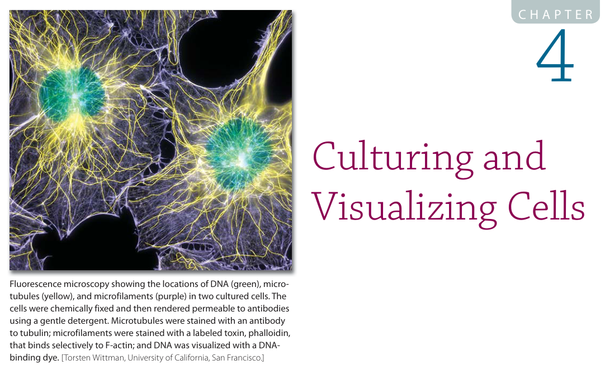
很难相信仅仅 200 年前，人们尚未认识到所有生物都由细胞构成。1655 年，罗伯特·胡克用一台原始显微镜观察软木切片，看到有序排列的矩形--死植物细胞的壁--这让他想起修道院僧侣的居室，于是他创造了"细胞"（cell）一词。此后不久，安东尼·范·列文虎克用简单显微镜观察到的微生物成为对活细胞的首次描述。又过两百年，马蒂亚斯·施莱登和西奥多·施旺提出细胞构成植物、动物和单细胞生物生命的基本单位。这些发现是生物学中最伟大的发现之一，也提出了细胞如何组织与功能的问题。
即使在今天，许多技术限制仍妨碍对完整动植物中细胞的研究。一种替代方案是使用从动物取出并处理
以维持其生理完整性和功能的完整器官。但器官的组织即便在分离状态下也足够复杂，给研究带来诸多问题。因此分子细胞生物学家常在分离自生物体的细胞上进行实验研究。4.1 节我们学习如何维持和培养多种细胞类型，以及如何从复杂混合物中分离特定类型细胞。
许多情况下，分离的细胞可在实验室中维持存活和生长的条件下培养，这一程序称为培养。培养细胞相对完整生物体用于细胞生物学研究有若干优势：可培养单一特定类型的细胞，实验条件可更好控制，且许多情况下单个细胞可容易地长成许多相同细胞的集落。所得遗传均一的细胞株称为克隆。但培养细胞不在其原生环境，研究者正在三维环境中生长和检查细胞以更接近模拟其在动物中的情况。
细胞组织的发现与显微术的发展密切相关。这在今天与 400 年前同样成立。光学显微术最初揭示了细胞美丽的内部组织，今天高度精密的显微镜不断改进，越来越深入探测细胞功能的分子机制。4.2 节我们讨论光学显微术及可用的久经考验但仍有价值的技术，然后考察近期发展的一些精巧方法，直至最新的前沿技术。20 世纪 60-70 年代的一大进展是免疫荧光显微术的发展，它允许在固定细胞中定位特定蛋白质，从而提供其位置的静态图像（如章首图所示）。此类研究导致一个重要认识：每种细胞器的膜和内部空间含一组独特的蛋白质，它们是细胞器执行独特功能所必需的。90 年代中期的另一大进展是表达嵌合蛋白（目的蛋白与天然荧光蛋白共价连接）的简单想法，使生物学家能观察活细胞中单个蛋白质的运动。突然间，细胞的动态本质被认识，改变了之前只能获得静态图像的细胞观。此外，它提出了一个技术挑战：显微镜对荧光蛋白的检测越灵敏，研究者能从数据中获取的信息越多。它还开启了活细胞中监测蛋白质-蛋白质相互作用及众多其他精密分子技术的荧光技术发展，本节也讨论其中一些。数十年来，光学显微术受限于光显微镜的分辨率--约 200 nm--这是可见光波长施加的限制。我们讨论近几年发展起来以"突破"此分辨率屏障的超分辨率显微术。
尽管光学显微术有惊人发展，可见光的分辨率仍太低，无法检查细胞的精细超微结构细节。电子显微镜分辨率高得多，但该技术通常要求细胞被固定和切片，因此所有细胞运动都被冻结在时间中。电子显微术也允许研究者检查大分子复合物或单个大分子的结构。4.3 节我们概述电子显微镜观察标本的各种制备方法，并描述可从中获取的信息类型。
光学和电子显微术揭示，所有真核细胞--无论真菌、植物还是动物来源--都含一组相似的膜界区室（细胞器），见第 1 章（图 1-12a）。与显微术发展并行，亚细胞分馏方法被开发，使细胞生物学家能高度纯化地分离各细胞器。4.4 节详述这些技术，它们持续提供关于细胞器蛋白质组成和生化功能的重要信息。
4.1 细胞的培养与研究
对细胞的研究因将其在培养中生长而大大便利，从而可在控制条件下用显微镜检查并进行特定处理。培养单细胞细菌、真菌或原生生物通常很容易，例如将其放入支持生长的丰富培养基。但动物细胞来自多细胞生物，使培养单个或小群细胞更困难。本节讨论动物细胞如何培养以及如何纯化不同细胞类型以供研究。
动物细胞培养需营养丰富的培养基和特殊固体表面
为允许培养组织或细胞的存活和正常功能，温度、pH、离子强度和必需营养物的获取必须尽可能模拟完整生物体内的条件。分离的动物细胞通常放入营养丰富的液体（培养基）中，置于特殊包被的塑料培养皿或培养瓶内。培养物保存在可控制温度、气氛和湿度的培养箱中。为减少细菌或真菌污染，培养基常加抗生素。为进一步防污染，研究者通常在过滤循环空气以去除微生物和其他空气污染物的特殊无菌柜内转移细胞、向培养基加试剂及操作标本。
培养动物细胞的培养基必须提供成年脊椎动物细胞不能合成的 9 种氨基酸（苯丙氨酸、缬氨酸、苏氨酸、色氨酸、异亮氨酸、甲硫氨酸、亮氨酸、赖氨酸和组氨酸）。此外，大多数培养细胞需要完整动物中仅由特化细胞合成的另外 3 种氨基酸（半胱氨酸、酪氨酸和精氨酸），以及作为氮源的谷氨酰胺。培养基的其他必要成分包括维生素、各种盐、脂肪酸、葡萄糖和血清（血液非细胞部分即血浆凝固后剩余的液体）。血清含哺乳动物细胞培养增殖所需的多种蛋白质因子，包括多肽激素胰岛素、以生物可利用形式提供铁的转铁蛋白，以及众多生长因子。此外，某些细胞类型需要血清中不存在的特化蛋白质生长因子。
例如，红细胞祖细胞需要促红细胞生成素，T 淋巴细胞需要白细胞介素 2（见第 16 章）。少数哺乳动物细胞类型可在化学限定的无血清培养基中生长，含氨基酸、葡萄糖、维生素、盐加某些微量矿物质、特定蛋白质生长因子和其他成分。
与可在悬浮液中生长的细菌和酵母细胞不同，大多数动物细胞类型只有在附着于固体表面时才能生长。这一要求突出了细胞表面蛋白（称为细胞黏附分子 CAM）的重要性，细胞用它们结合相邻细胞和胞外基质组分（如胶原蛋白、层粘连蛋白或纤连蛋白，见第 20 章）。固体生长表面（通常玻璃或塑料）或预先用这些胞外基质蛋白包被，或它们来自血清或由培养细胞分泌。在玻璃或塑料皿上培养的单个细胞增殖形成可见团块（集落），含数千个遗传相同的细胞，需 4-14 天（取决于生长速率）。虽然大多数正常动物细胞需要表面生长，但一些特化血细胞，尤其是肿瘤细胞，可作为单细胞在悬浮液中生长。
原代细胞培养和细胞株寿命有限
原代细胞是直接从组织分离的细胞。正常动物组织（如皮肤、肾、肝）或整个胚胎常用于建立原代细胞培养。为制备原代培养的个体组织细胞，必须打破细胞-细胞和细胞-基质相互作用。为此，组织片段用蛋白酶（如胰蛋白酶、水解胶原蛋白的胶原蛋白酶或两者）和二价阳离子螯合剂（如 EDTA，耗尽培养基游离钙 Ca²⁺）的混合物处理。许多 CAM 需钙，故钙去除时失活；不依赖钙的其他 CAM 需被蛋白酶切割才能使细胞分离。释放的细胞然后放入营养丰富的血清补充培养基中，它们可附着表面和彼此。相同的蛋白酶-螯合剂溶液用于从培养皿去除贴壁细胞以供生化研究或传代培养（转移到另一皿）。
成纤维细胞是结缔组织中的主要细胞，通常产生胞外基质组分（如胶原蛋白），结合 CAM，从而将细胞锚定到表面。培养中，成纤维细胞通常比组织中其他细胞分裂更快，最终成为原代培养中的主要细胞类型，除非在分离其他类型细胞时采取特殊预防措施去除它们。
从胚胎或成年动物取出的细胞培养时，大多数贴壁细胞分裂有限次数后停止生长（细胞衰老现象）。例如，人胎儿成纤维细胞分裂约 50 次后停止生长（图 4-1a）。从 10⁶ 细胞开始，50 次倍增可能产生 10⁶ × 2⁵⁰ 即超过 10²⁰ 细胞，其重量约等于一千人。通常任何单个实验只用这些细胞的一小部分。因此，即使其寿命有限，单个培养物若仔细维护也可研究多个细胞世代。源自一个初始原代培养的此类细胞谱系称为细胞株。
正常细胞寿命有限的一个重要例外是胚胎干细胞，顾名思义源自胚胎，将在发育中分裂并产生所有组织。如第 21 章讨论，胚胎干细胞可在适当条件下无限培养。
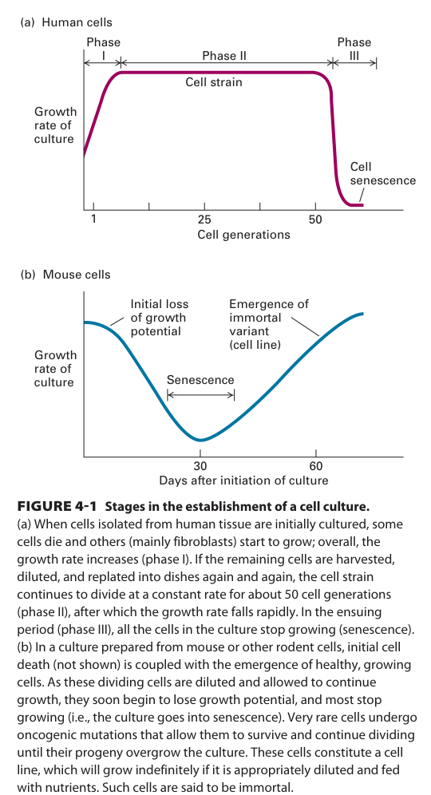
| cell culture | 细胞培养 |
| fibroblast | 成纤维细胞 |
| cell strain | 细胞株 |
| cell generations | 细胞世代 |
| senescence | 衰老 |
| oncogenic mutation | 致癌突变 |
| cell line | 细胞系 |
| immortal | 永生 |
| growth rate | 生长速率 |
| rodent | 啮齿动物 |
| replate | 重新接种 |
| progeny | 后代 |
细胞株的研究因我们能冷冻并在日后成功解冻以供实验分析而简化。细胞株可冷冻于暂停动画状态，在液氮温度下长期保存（前提是使用防止破坏性冰晶形成的保护剂）。虽非所有细胞都能在解冻中存活，但许多能存活并恢复生长。
转化细胞可在培养中无限生长
为能克隆单个细胞、修改细胞行为或筛选突变体，生物学家常希望维持细胞培养超过 50 次倍增。源自某些肿瘤的细胞表现出这种延长生长。此外，原代细胞群体中的罕见细胞可能经历自发致癌突变，导致致癌转化（见第 24 章）。此类细胞（称致癌转化或简称转化）能无限生长。寿命无限的细胞培养视为永生，称为细胞系。
正常啮齿动物细胞的原代培养常自发转化为细胞系。啮齿动物细胞培养数代后，培养物进入衰老（图 4-1b）。此期间，大多数细胞停止生长，但常自发出现快速分裂的转化细胞并接管（过度生长）培养物。源自此类转化变体的细胞系在提供必需营养物时无限生长。与啮齿动物细胞对比，正常人细胞很少自发转化为细胞系。HeLa 细胞系（首个建立的人细胞系）最初于 1952 年从子宫颈恶性肿瘤（癌）获得，至今仍广泛使用。许多其他人细胞系源自癌症，生物学家也通过转化使其他细胞表达癌基因而永生化。
无论来源，永生细胞系中的细胞常有异常 DNA 序列的染色体。此外，此类细胞的染色体数目通常大于其来源的正常细胞，且随细胞在培养中继续分裂而变化。一个值得注意的例外和令人兴奋的进展是最近描述的一种人造血来源细胞系，除 8 号染色体外所有染色体都是单倍体。由于二倍体细胞中一个基因两拷贝之一失活通常不产生表型，大多数基因为单拷贝的细胞株对遗传分析应非常有用，使模型生物中采用的遗传筛选成为可能（见第 6 章）。染色体数目异常的细胞称为非整倍体。
流式细胞术分离不同细胞类型
某些细胞类型密度差异足够大，可根据此物理性质分离。例如白细胞和红细胞密度非常不同（因红细胞无核），故可通过平衡密度梯度离心（4.4 节描述）分离。大多数细胞类型不能如此容易区分，需用其他技术如流式细胞术。
为从复杂混合物中分离一种类型细胞，需有标记然后分拣目标细胞的方法。如我们将见，可通过在细胞中表达荧光蛋白来标记，但若群体中只有少数细胞表达蛋白，如何从非荧光细胞中分拣？细胞可在流式细胞仪中分析。该机器使细胞流过激光束，测量其散射光和发射荧光，从而可量化混合物中表达荧光蛋白的细胞。基于流式细胞术的荧光激活细胞分拣器（FACS）既能分析细胞又能从数千个其他细胞中选出少数荧光细胞并分拣到单独培养皿（图 4-2）。为此，细胞与缓冲液混合并被迫通过振动喷嘴以产生微小液滴。细胞浓度调整使大多数液滴不含细胞，含细胞的只有一个。喷嘴前，细胞流通过激光束，用一探测器从散射光记录细胞存在和大小，用第二荧光探测器量化发射荧光量。若液滴含细胞，该液滴从喷嘴出来时被赋予负电荷。液滴流然后通过两板间，产生与液滴细胞检测到的荧光成比例的电场。此场产生力将带电液滴移出未充电液滴流进入收集管。由于施加力与液滴细胞发射荧光成比例，不同荧光水平的细胞可被收集。从其他细胞分拣后，选出的细胞可在培养中生长。
FACS 程序常用于纯化不同类型白细胞，每种表面带一个或多个独特蛋白质，故会结合其蛋白质的特异性单克隆抗体。若细胞混合物与连接到特异性细胞表面蛋白抗体的荧光染料孵育，只有目标细胞会荧光。例如免疫系统 T 细胞表面同时有 CD3 和 Thy1.2 蛋白。这些表面蛋白的存在使 T 细胞容易从其他类型血细胞或脾细胞中分离（图 4-3）。
流式细胞术的其他用途包括测量细胞 DNA 和 RNA 含量及确定其一般形状和大小。FACS 可同时测量细胞大小（从散射光量）和 DNA 含量（从 DNA 结合染料发射的荧光量）。单细胞 DNA 含量测量
用于随细胞周期进展跟踪 DNA 复制（见第 19 章）。
分离特定类型细胞的另一种方法使用与特异性细胞表面分子抗体偶联的小磁珠。例如分离 T 细胞，磁珠涂以 CD3 或 Thy1.2 等表面蛋白的特异性单克隆抗体。只有带这些蛋白的细胞会粘附磁珠，磁珠可通过吸附到试管侧面的小磁铁回收。
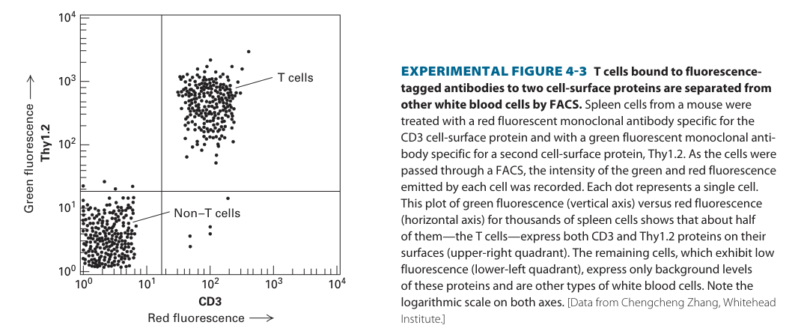
| T cell | T 细胞 |
| white blood cell | 白细胞 |
| CD3 | CD3 |
| Thy1.2 | Thy1.2 |
| monoclonal antibody | 单克隆抗体 |
| spleen cell | 脾细胞 |
| fluorescence | 荧光 |
| logarithmic scale | 对数标尺 |
| quadrant | 象限 |
| background | 本底 |
| cell-surface protein | 细胞表面蛋白 |
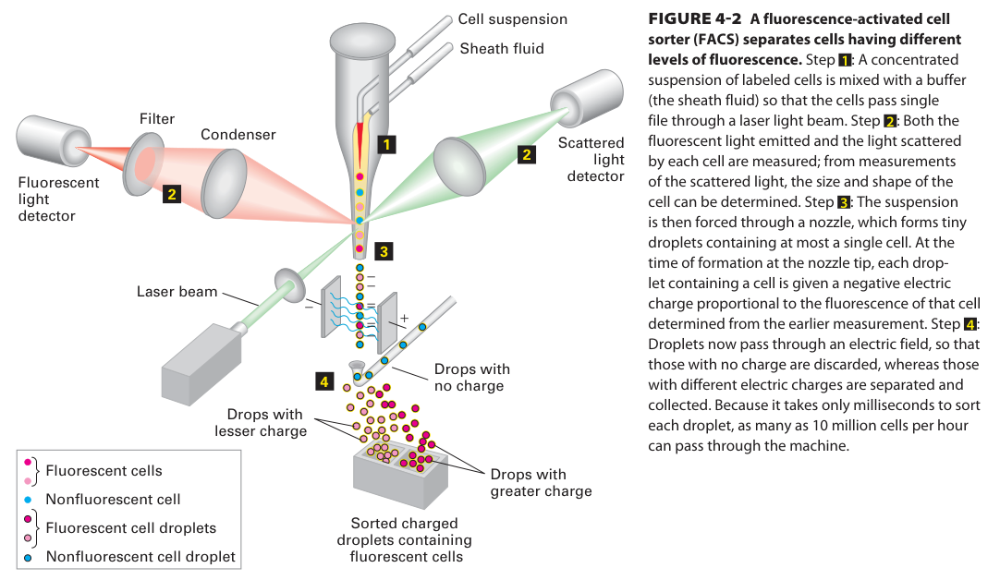
| fluorescence-activated cell sorter | 荧光激活细胞分拣器 |
| FACS | FACS |
| fluorescence | 荧光 |
| sheath fluid | 鞘液 |
| laser beam | 激光束 |
| condenser | 聚光器 |
| scattered light | 散射光 |
| detector | 检测器 |
| droplet | 液滴 |
| electric charge | 电荷 |
| nozzle | 喷嘴 |
| suspension | 悬液 |
二维和三维培养模拟体内环境
虽然在塑料或玻璃表面生长的细胞上学到很多，但这些表面远离细胞的正常组织环境。如第 20 章详述，许多细胞类型只有在与其他细胞密切联系时才发挥作用。关键例子是覆盖器官外
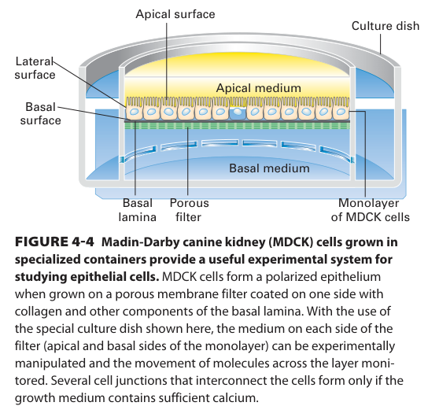
| Madin-Darby canine kidney | 犬犬肾上皮（MDCK） |
| MDCK | MDCK |
| epithelium | 上皮 |
| polarized | 极化 |
| porous membrane filter | 多孔膜滤片 |
| collagen | 胶原 |
| basal lamina | 基板 |
| apical surface | 顶面 |
| basal surface | 基底面 |
| monolayer | 单层 |
| cell junction | 细胞间连接 |
和内表面的片状上皮组织层（上皮，单数 epithelium）。典型地，上皮细胞有不同表面：顶面（顶部）、底面（基底或底部）和侧面（图 20-11）。
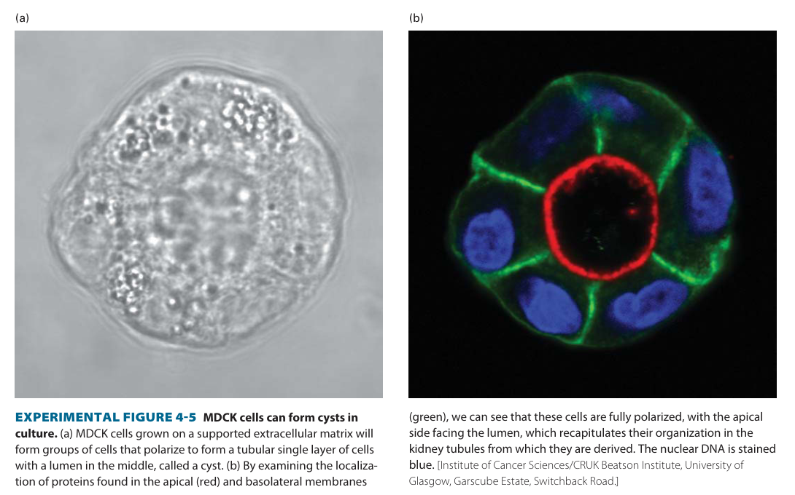
| extracellular matrix | 细胞外基质 |
| cyst | 囊泡 |
| lumen | 腔 |
| polarization | 极化 |
| apical membrane | 顶面膜 |
| basolateral membrane | 基底侧膜 |
| kidney tubule | 肾小管 |
| nuclear DNA | 核 DNA |
| tubular | 管状 |
基底面通常接触下方胞外基质（基板），其组成和功能在 20.3 节讨论。上皮细胞常跨上皮片运输特定类别分子；例如肠上皮通过顶面将营养物运入细胞、通过基底外侧面向血流运出。在塑料或玻璃上生长时，上皮细胞不能轻易执行此功能。因此，设计了带孔表面的特殊容器作为基板，上皮细胞附着并形成均匀二维片（图 4-4）。常用的源自狗肾上皮的培养细胞系（Madin-Darby 犬肾 MDCK 细胞系）常用于研究上皮片的形成和功能。
但即使二维片也常不允许细胞完全模拟其正常环境中的行为。现已开发通过提供浸润适当胞外基质组分（第 20 章讨论）的支持物在三维中生长细胞的方法。若在适当条件下培养 MDCK 细胞，它们会形成管状片，模拟管状器官或分泌腺导管。在这些三维结构中，上皮片的顶面衬腔，而每个细胞的基底面与胞外基质接触（图 4-5）。
若能在培养中生长上皮管，能否生长可移植到患者的整个器官？生物医学工程的最新进展正在开发有前景的策略，最初在实验动物中。一种方法中，3D 打印机用于帮助制造替代耳。首先生成耳朵的精确计算机图像。此图像用于编程 3D 打印机，组装含可降解支撑材料和适当胞外基质组分的基质，呈耳朵精确形状。此基质支持皮肤细胞生长（培养中或移植到皮下后），使合成器官最终能手术附着到活体动物。其他方法用 3D 打印机组装基质并接种适当细胞。此技术一个令人兴奋的雄心目标是生成含多种不同类型细胞的合成器官，通过用适当基质和细胞打印若干层中的每一层，生成有朝一日可能用于替换患者缺陷器官的复杂三维器官。仍需克服许多障碍，但从患者生成干细胞然后在培养中诱导分化（第 21 章描述）正在克服免疫排斥的主要障碍，并可能成为为合成器官组装提供细胞的关键。■
杂交瘤产生大量单克隆抗体
除作为细胞功能研究的模型外，培养细胞可转化为生产特定蛋白质的"工厂"。例如特殊培养细胞可用于产生单克隆抗体，这是细胞生物学研究许多方面广泛使用的实验工具。它们也用于医学诊断和治疗，后续章节讨论。
为理解产生单克隆抗体的挑战，我们简要回顾哺乳动物如何产生抗体；更多细节见第 23 章。回想抗体是白细胞分泌的蛋白质，以高亲和力结合其抗原（见图 3-19）。哺乳动物中每个正常抗体产生 B 淋巴细胞能产生单一类型抗体，结合抗原分子上特定决定簇或表位。表位通常是抗原上的小区域，例如仅几个氨基酸。若向动物注射抗原，制造识别该抗原抗体的 B 淋巴细胞受刺激生长并分泌这些抗体。每个抗原激活的 B 淋巴细胞在脾或淋巴结形成细胞克隆，每个细胞产生相同抗体即单克隆抗体。因大多数天然抗原含多个表位，动物接触抗原通常刺激多个 B 淋巴细胞克隆形成，每个产生不同抗体。来自识别抗原不同表位的许多 B 淋巴细胞克隆的抗体混合物称
多克隆。此类多克隆抗体循环于血液，可作为一组分离。
虽多克隆抗体很有用，但单克隆抗体更适合许多需要只结合蛋白一个位点试剂的实验和医学应用；例如与细胞表面受体配体竞争的。不幸的是，从血液生化纯化任何一种单克隆抗体不可行，原因有二：任何给定抗体浓度很低，且所有抗体有相同基本分子结构（见图 3-19）。
为产生然后纯化单克隆抗体，首先需能培养适当的 B 淋巴细胞克隆。但正常 B 淋巴细胞原代培养因寿命有限而用于产生单克隆抗体用途有限。故产生单克隆抗体的第一步是生成永生抗体产生细胞（图 4-6）。永生通过将免疫动物正常 B 淋巴细胞与本身不合成抗体的转化永生淋巴细胞（骨髓瘤细胞）融合实现（见图 3-19）。用某些病毒糖蛋白或化学聚乙二醇处理促使两细胞质膜融合，使胞质和细胞器混合。一些融合细胞经历分裂，核最终合并，产生含来自两亲本细胞染色体的单核可行杂交细胞。两个遗传不同细胞融合可产生具新特征的杂交细胞。例如骨髓瘤细胞与大鼠或小鼠脾正常抗体产生细胞融合产生杂交，增殖为克隆称杂交瘤。与骨髓瘤细胞一样，杂交瘤细胞快速生长且永生。每个杂交瘤产生其 B 淋巴细胞亲本编码的单克隆抗体。
产生单克隆抗体程序的第二步是分离或选择杂交瘤细胞与未融合亲本细胞及与同型融合细胞。此选择通常通过在特殊培养基（选择培养基）中孵育细胞混合物进行，该培养基因杂交瘤细胞的新特征只允许其生长。用于融合的骨髓瘤细胞携带阻断代谢途径的突变，故可使用对其致命而对其无此突变的 B 淋巴细胞融合伙伴不致命的选择培养基。在永生杂交细胞中，淋巴细胞的功能基因可提供缺失基因产物。融合所用淋巴细胞非永生，在选择培养基中也不能生长。故杂交瘤细胞是能在选择培养基中快速增殖的唯一细胞，可容易从初始细胞混合物中分离。最后，测试每个选定杂交瘤克隆是否产生所需抗体；产生该抗体的任何克隆在大培养物中生长，从中可获得大量纯单克隆抗体。
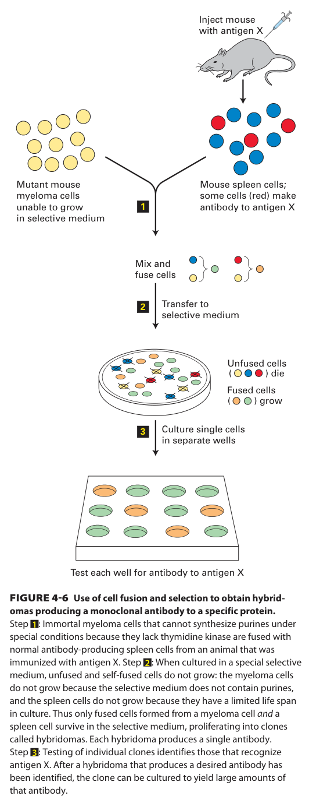
| hybridoma | 杂交瘤 |
| myeloma | 骨髓瘤 |
| monoclonal antibody | 单克隆抗体 |
| thymidine kinase | 胸苷激酶 |
| purine | 嘌呤 |
| antigen | 抗原 |
| spleen cell | 脾细胞 |
| selective medium | 选择培养基 |
| clone | 克隆 |
| antibody | 抗体 |
| immunize | 免疫 |
单克隆抗体已成为非常有价值的特异性研究工具。它们常用于亲和层析以从复杂混合物中分离纯化蛋白质（见图 3-38c）。如本章后述，它们也可用于免疫荧光显微术以结合并定位细胞内特定蛋白质。它们也可用免疫印迹鉴定细胞组分中的特定蛋白质（见图 3-39）。单克隆抗体也成为医学重要的诊断和治疗工具；例如结合并灭活细菌病原体分泌毒素的单克隆抗体用于治疗疾病。其他单克隆抗体对某些类型肿瘤细胞表达的细胞表面蛋白特异。其中几种抗肿瘤抗体广泛用于癌症治疗，包括针对某些乳腺癌过表达的 Her2 受体突变形式的一种单克隆抗体。
培养细胞可研究多种细胞生物学过程
如本章引言讨论，在培养中研究动物细胞比在完整动物中容易得多，部分因为它们容易接受多种操作。培养细胞特别有利于阐明基本过程。理解生物过程的一种方式是干扰细胞中特定组分并评估结果--此方法类似通过拆除组件看出了什么问题来理解汽车如何工作。某些情况下，与特定细胞组分遗传缺陷相关的人类疾病可用患者培养细胞分析。例如，分析遗传缺陷导致高胆固醇血症（血胆固醇升高导致心脏病和中风）患者的培养细胞对阐明受体介导内吞的基本步骤至关重要（见第 14 章）。除依赖自然发生遗传损伤外，我们可操作培养细胞干扰特定组分表达。如第 6 章所见，可通过选择性"敲低"相应 mRNA 来减少培养细胞中特定蛋白质表达，然后评估此变化对细胞特定过程的影响。第 6 章还描述了最近开发的技术，可用于灭活培养细胞基因组中特定基因，从而评估特定 RNA 和蛋白质完全丧失如何影响细胞功能。
药物常用于细胞生物学研究
分析生物过程的另一种强大方法是用药物处理细胞，药物结合特定细胞组分并使其失活或激活。本节讨论为此目的常用的一些药物以及如何开发影响特定细胞过程的新药。
天然药物使用了数世纪，但其作用机制常未知。例如秋水仙提取物用于治疗痛风（关节炎症导致的疼痛疾病）。今天我们知道此植物含秋水仙素，一种使微管解聚并干扰白细胞移动到炎症部位能力的药物（见第 18 章）。亚历山大·弗莱明发现某些真菌分泌杀死细菌的化合物（抗生素），他的发现导致青霉素的开发。后来才发现青霉素通过阻断某些细菌细胞壁组装来抑制细胞分裂。
| 类别 | 英文名 | 中文名 | 作用机制 |
|---|---|---|---|
| DNA 复制抑制剂 | Aphidicolin | 蚜孢霉素 | 真核 DNA 聚合酶抑制剂 |
| Camptothecin | 喜树碱 | 真核拓扑异构酶抑制剂 | |
| Etoposide | 依托泊苷 | 真核拓扑异构酶抑制剂 | |
| 转录抑制剂 | α-Amanitin | α-鹅膏蕈碱 | 真核 RNA 聚合酶 II 抑制剂 |
| Actinomycin D | 放线菌素 D | 真核转录延伸抑制剂 | |
| DRB (5,6-Dichloro-1-β-D-ribofuranosylbenzimidazole) | 5,6-二氯-1-β-D-呋喃核糖基苯并咪唑（DRB） | 真核转录延伸抑制剂 | |
| Rifampicin | 利福平 | 细菌 RNA 聚合酶抑制剂 | |
| Thiolutin | 硫链丝菌素 | 细菌和酵母 RNA 聚合酶抑制剂 | |
| 蛋白质合成抑制剂阻断一般蛋白产生；长时间暴露后有毒性 | Cycloheximide | 放线菌酮 | 真核翻译抑制剂 |
| Anisomycin | 茴香霉素 | 真核翻译抑制剂 | |
| Geneticin / G418 | 遗传霉素 / G418 | 细菌和真核翻译抑制剂 | |
| Hygromycin | 潮霉素 | 细菌和真核翻译抑制剂 | |
| Puromycin | 嘌呤霉素 | 细菌和真核翻译抑制剂 | |
| Chloramphenicol | 氯霉素 | 细菌和线粒体翻译抑制剂 | |
| Tetracycline | 四环素 | 细菌翻译抑制剂 | |
| 蛋白酶抑制剂阻断蛋白降解 | MG-132 | MG-132 | 蛋白酶体抑制剂 |
| Lactacystin | 乳胞素 | 蛋白酶体抑制剂 | |
| E-64 | E-64 | 丝氨酸和/或半胱氨酸蛋白酶抑制剂 | |
| Leupeptin | 亮肽素 | 丝氨酸和/或半胱氨酸蛋白酶抑制剂 | |
| PMSF | 苯甲基磺酰氟（PMSF） | 丝氨酸蛋白酶抑制剂 | |
| TLCK | 甲苯磺酰-L-赖氨酸氯甲基酮（TLCK） | 类胰蛋白酶丝氨酸蛋白酶抑制剂 | |
| 影响细胞骨架的化合物 | Phalloidin | 鬼笔环肽 | F-肌动蛋白稳定剂 |
| Jasplakinolide | 茉莉酰胺醇 | F-肌动蛋白稳定剂 | |
| Latrunculin | 红海海绵素 | F-肌动蛋白聚合抑制剂 | |
| Cytochalasin | 细胞松弛素 | F-肌动蛋白聚合抑制剂 | |
| Taxol | 紫杉醇 | 微管稳定剂 | |
| Colchicine | 秋水仙碱 | 微管聚合抑制剂 | |
| Nocodazole | 诺考达唑 | 微管聚合抑制剂 | |
| Vinblastine | 长春碱 | 微管聚合抑制剂 | |
| Podophyllotoxin | 鬼臼毒素 | 微管聚合抑制剂 | |
| Monastrol | Monastrol | 驱动蛋白-5 抑制剂 | |
| 影响膜运输、胞内运动和分泌途径、蛋白糖基化的化合物 | Brefeldin A | 布雷菲德菌素 A | 分泌抑制剂 |
| Leptomycin B | 来普霉素 B | 核蛋白输出抑制剂 | |
| Dynasore | Dynasore | 发动蛋白抑制剂 | |
| Tunicamycin | 衣霉素 | N-连接糖基化抑制剂 | |
| 激酶抑制剂 | Genistein | 染料木素 | 具各种特异性的酪氨酸激酶抑制剂 |
| Rapamycin | 雷帕霉素 | 具各种特异性的酪氨酸激酶抑制剂 | |
| Gleevec | 格列卫 | 具各种特异性的酪氨酸激酶抑制剂 | |
| Wortmannin | 渥曼青霉素 | PI3 激酶抑制剂 | |
| LY294002 | LY294002 | PI3 激酶抑制剂 | |
| Staurosporine | 星孢菌素 | 蛋白激酶抑制剂 | |
| Roscovitine | Roscovitine | 细胞周期 CDK1 和 CDK2 抑制剂 | |
| U0126 | U0126 | MEK 抑制剂 | |
| 磷酸酶抑制剂 | Cyclosporine A | 环孢素 A | 具各种特异性的蛋白磷酸酶抑制剂 |
| FK506 | FK506 | 具各种特异性的蛋白磷酸酶抑制剂 | |
| Calyculin | 花萼素 | 具各种特异性的蛋白磷酸酶抑制剂 | |
| Okadaic acid | 冈田酸 | 丝氨酸/苏氨酸磷酸酶的一般抑制剂 | |
| Phenylarsine oxide | 苯胂氧化物 | 酪氨酸磷酸酶抑制剂 | |
| Sodium orthovanadate | 原钒酸钠 | 酪氨酸磷酸酶抑制剂 | |
| 影响胞内 cAMP 水平的化合物 | Forskolin | Forskolin | 腺苷酸环化酶激活剂 |
| 影响离子（如 K⁺、Ca²⁺）的化合物 | A23187 | A23187 | Ca²⁺ 离子载体 |
| Valinomycin | 缬氨霉素 | K⁺ 离子载体 | |
| BAPTA | BAPTA | 二价阳离子（如 Ca²⁺）结合/螯合剂 | |
| Thapsigargin | 毒胡萝卜素 | 内质网 Ca²⁺ ATPase 抑制剂 | |
| Ouabain | 乌本苷 | Na⁺/K⁺ ATPase 抑制剂 | |
| 医学中使用的一些药物 | Propranolol | 普萘洛尔 | β-肾上腺素能受体拮抗剂 |
| Statins | 他汀类 | HMG-CoA 还原酶抑制剂，阻断胆固醇合成 | |
| Omeprazole | 奥美拉唑 | 胃质子泵抑制剂 |
注意：这些分子中有些具广谱特异性，而其他高度特异。许多这些化合物的更多信息可在本书相关章节中找到。
此类发现产生了可抑制细胞特定和必需过程的广泛药物。大多数情况下，研究者最终能鉴定这些药物的分子靶标。例如有许多影响原核蛋白质合成的抗生素药物。表 4-1 列出细胞生物学研究中最常用的一些药物，按其抑制的过程分组。
如何发现新药？一种广泛使用的方法是在化学库（含数万至数十万种不同化合物的库）中搜索抑制特定过程的化学物质。化学库筛选
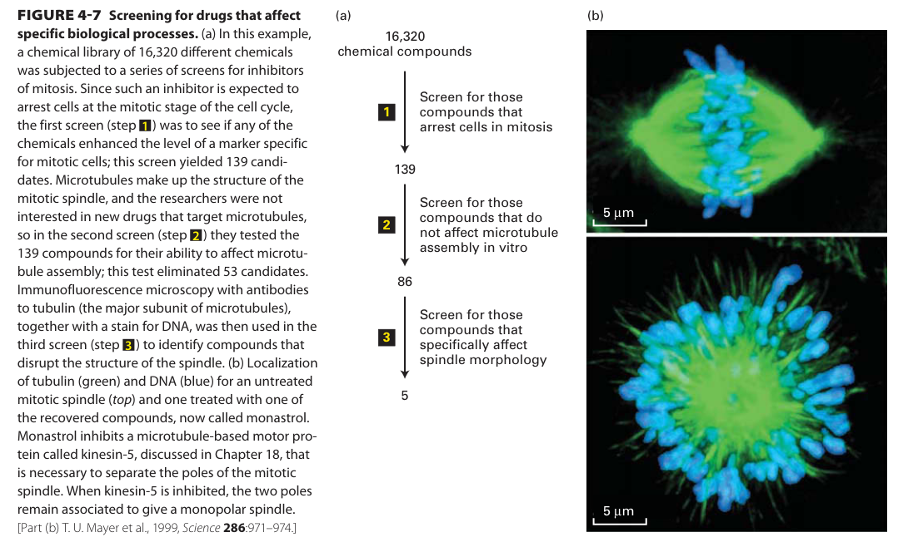
| chemical library | 化学库 |
| mitosis | 有丝分裂 |
| mitotic spindle | 有丝分裂纺锤体 |
| microtubule | 微管 |
| immunofluorescence microscopy | 免疫荧光显微术 |
| tubulin | 微管蛋白 |
| monastrol | monastrol |
| kinesin-5 | 驱动蛋白-5 |
| motor protein | 马达蛋白 |
| monopolar spindle | 单极纺锤体 |
| candidate | 候选物 |
| spindle morphology | 纺锤体形态 |
| microtubule assembly | 微管组装 |
结合高通量显微技术现已成为新药发现线索的主要途径之一。此处我们给一个案例说明此类方法如何工作。
在我们的例子中（图 4-7a），研究者想鉴定抑制有丝分裂（复制染色体被基于微管的机器即有丝分裂纺锤体精确分配的过程，第 18 章讨论）的化合物。已知若纺锤体组装受损，细胞被阻滞在有丝分裂。故筛选首先用自动化机器人方法寻找将细胞阻滞于有丝分裂的化合物。然后探索候选化合物抑制有丝分裂的基础，看它们是否影响微管组装。因微管组装抑制不感兴趣，用微管蛋白（微管主要蛋白）抗体的免疫荧光显微术确定其余候选化合物对纺锤体结构的影响。筛选了 16000 多种化合物，鉴定出一种导致细胞纺锤体异常的化合物--非两个星体，而是单个星体，形成所谓单星阵列（图 4-7b）。此药现称 monastrol，发现通过抑制基于微管的马达蛋白 kinesin-5 来干扰纺锤体组装。（有丝分裂纺锤体更多细节见第 18 章。）monastrol 衍生物现正作为抗肿瘤剂测试治疗某些癌症。
第 4.1 节关键概念
细胞的培养与研究
● 动物细胞必须在模拟其自然环境的条件下培养，通常需提供必需氨基酸和生长因子。
● 大多数动物细胞需附着固体表面才能生长。
● 原代细胞（直接从组织分离）寿命有限。
● 转化细胞（如源自肿瘤的细胞）可在培养中无限生长。
● 可无限生长的细胞称为细胞系。
● 许多细胞系非整倍体，染色体数不同于其来源亲本细胞。
● 表达荧光蛋白的细胞可在荧光激活细胞分拣器（FACS）上分拣。
● 不同细胞类型在细胞表面表达不同标记蛋白，可用荧光标记标记，在 FACS 机器上分拣。
● 上皮细胞常在特殊容器中培养以模拟其功能极性。细胞也可在三维基质上生长以更准确反映其正常环境。
● 单克隆抗体（结合抗原上一个表位）可由杂交瘤培养细胞分泌。这些杂交细胞通过融合抗体产生 B 淋巴细胞与永生骨髓瘤细胞，然后鉴定产生所需抗体的克隆制成。单克隆抗体对基础研究和治疗剂重要。
● 培养细胞比完整动物中的细胞更容易操作。
● 基本生物过程可通过干扰特定细胞组分研究（遗传机制或施用特定药物）。
● 可筛选大化学库寻找靶向特定过程的化合物以研究这些过程并鉴定新药。
4.2 光学显微术：探索细胞结构与细胞内蛋白质可视化
生命的细胞基础最初用原始光显微镜认识。此后，细胞生物学进展与光学显微术技术进步并行，且常被其驱动（图 4-8）。我们讨论这些主要发展及其如何推进细胞过程研究。首先描述光显微镜观察未染色细胞和结构的基本用途。
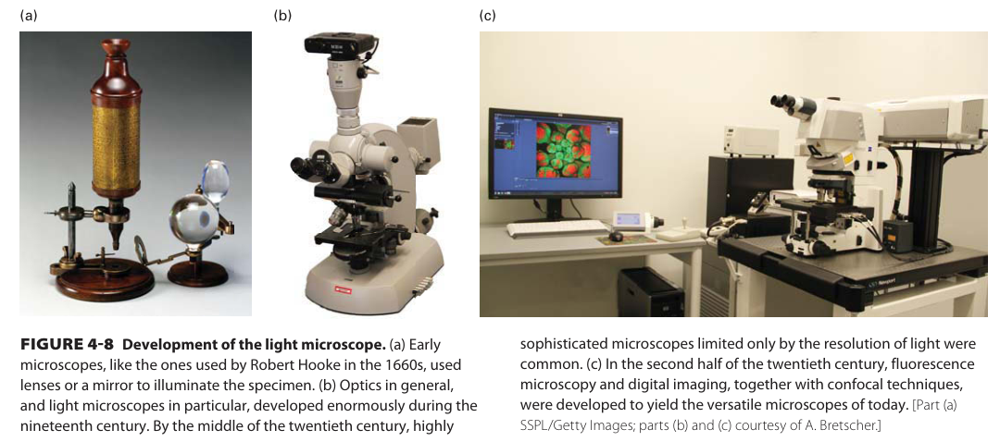
| light microscope | 光显微镜 |
| resolution | 分辨率 |
| fluorescence microscopy | 荧光显微术 |
| digital imaging | 数字成像 |
| confocal | 共聚焦 |
| specimen | 标本 |
接下来描述荧光显微术的发展及其在固定细胞中定位特定蛋白质的用途。通过用分子遗传技术将目的蛋白与天然荧光蛋白融合并在细胞中表达嵌合蛋白，可跟踪活细胞中特定蛋白质的运动--此能力揭示了活细胞组织是多么动态。与标本制备进展并行，光学进展也在增强和锐化荧光显微术提供的图像，以前所未有的清晰度揭示细胞结构。许多专门技术从这些进展中涌现，我们描述其中一些较重要的。
我们描述的许多技术允许在显微镜中检查活细胞。这些进展不仅允许视频显微术，还允许检查活细胞或其组分对特定刺激的响应或与其他细胞的相互作用。如本节讨论，它们为科学家提供了探测活细胞中个体组分功能的能力。
常规光显微镜分辨率约 0.2 μm
所有显微镜都产生小物体的放大图像，但图像性质取决于所用显微镜类型和标本制备方式。常规明场光显微术所用复合显微镜含若干透镜，放大所研究标本的图像（图 4-9a、b）。总放大率是各透镜放大率之积：若物镜（最接近标本的透镜）放大 100 倍（100× 透镜，通常所用的最大），聚焦
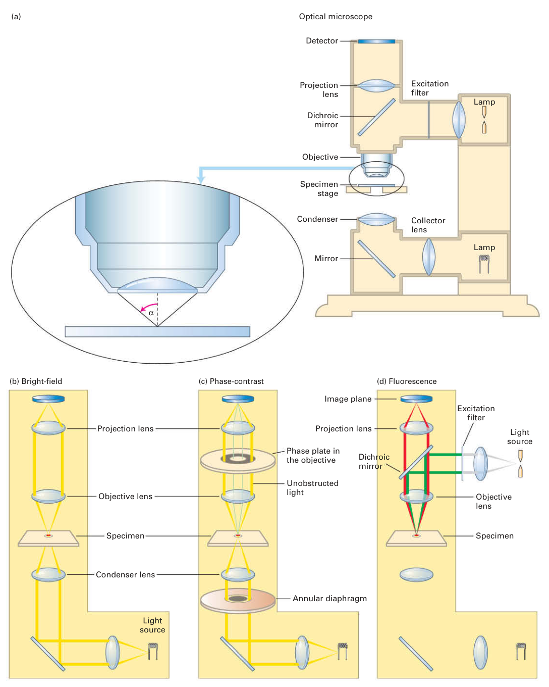
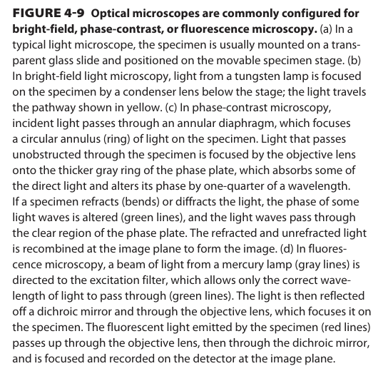
| bright-field microscopy | 明场显微术 |
| phase-contrast microscopy | 相差显微术 |
| fluorescence microscopy | 荧光显微术 |
| condenser lens | 聚光镜 |
| objective lens | 物镜 |
| projection lens | 投影镜 |
| specimen stage | 载物台 |
| annular diaphragm | 环形光阑 |
| phase plate | 相板 |
| dichroic mirror | 二色镜 |
| excitation filter | 激发滤片 |
| image plane | 像平面 |
| detector | 检测器 |
| mercury lamp | 汞灯 |
| wavelength | 波长 |
| tungsten lamp | 钨丝灯 |
| refract | 折射 |
| diffract | 衍射 |
| collector lens | 集光镜 |
图像到相机的投影透镜放大 10 倍，最终放大率 1000 倍。或者，若光导向放大 10 倍的目镜，人眼记录的最终放大率也是 1000 倍。
但任何显微镜最重要的性质不是放大率，而是分辨能力（分辨率）：区分两个非常接近物体的能力。若图像模糊，仅放大标本图像无济于事。显微镜透镜的分辨率数值上等价于 D（两个可区分物体间最小距离）。D 值越小，分辨率越好。D 值由方程给出
D = 0.61λ / (N sin α) (4-1)
其中 α 是从标本进入物镜的光锥的角孔径（半角）（图 4-9a），N 是标本与物镜间介质的折射率（即介质中光速与空气中光速之比），λ 是入射光波长。通过用更短波长光（减小 λ）或收集更多光（增大 N 或 α）改善分辨率。高分辨率显微术透镜设计为在透镜和标本间用油（因油折射率更高，1.56，空气 1.0，水 1.3）。为最大化角度 α 从而 sin α，透镜也设计为聚焦非常接近覆盖标本的薄盖玻片。N sin α 项称为数值孔径（NA），通常标在物镜上。好的高倍透镜 NA 约 1.4，最好的透镜（价值相当于一辆中型车）NA 接近 1.5。注意放大率不在此方程中。
由于基于光物理性质的 α、λ、N 值限制，使用可见光的光显微镜分辨率极限约 0.2 μm（200 nm）。无论图像放大多少次，常规光显微镜永远无法分辨距离小于约 0.2 μm 的物体或揭示小于约 0.2 μm 的细节。但近几年开发的一些精密技术可"突破"此分辨率屏障，分辨仅几纳米间隔的物体；我们在后面章节讨论此类超分辨率显微镜。
尽管缺乏分辨率，常规显微镜可跟踪单个物体到几纳米内。若我们知物体的精确大小和形状（如附着于抗体的 5 nm 金球，抗体又结合活细胞表面蛋白），且用相机快速拍摄多张数字图像，则计算机可计算平均位置以揭示物体中心到几纳米内。这样，计算机算法可用于跟踪单个物体（此处是金标抗体标记的细胞表面蛋白的位置和随时间运动），比仅基于光显微镜分辨率更精确。此技术已用于测量分子和囊泡沿细胞骨架丝移动的纳米级步长（见图 17-28、17-29）。
相差和微分干涉相差显微术观察未染色活细胞
细胞约 70% 水、15% 蛋白质、6% RNA，含少量脂质、DNA 和小分子。由于这些主要分子类别都无色且几乎不阻碍光透射，须用特殊方法在显微镜中看到细胞。例如最简单显微镜用明场光学观察细胞（图 4-9b），几乎看不到细节（图 4-10）。两种对活细胞和未染色组织成像以产生对比的常用方法利用细胞材料折射率和厚度的差异。这些方法称相差显微术和微分干涉相差（DIC）显微术（或 Nomarski 干涉显微术），产生的图像外观不同，揭示细胞架构的不同特征。图 4-10 比较这些方法和标准明场显微术获得的活培养细胞图像。由于光学显微镜昂贵，常设置在同一显微镜架上执行多种显微术（见图 4-9a-d）。
相差显微术产生图像，标本区域暗度或亮度取决于该区域折射率。光在折射率更高的介质中移动更慢。故
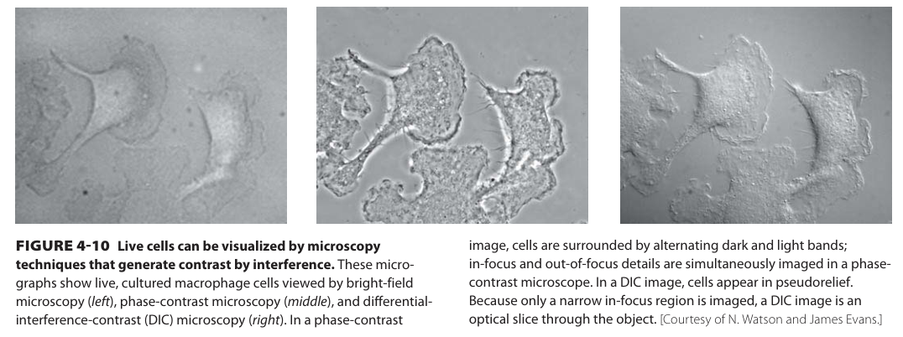
| interference | 干涉 |
| macrophage | 巨噬细胞 |
| bright-field microscopy | 明场显微术 |
| phase-contrast microscopy | 相差显微术 |
| differential interference-contrast microscopy | 微分干涉相差（DIC）显微术 |
| DIC | DIC |
| pseudorelief | 伪浮雕 |
| optical slice | 光学切片 |
| in-focus | 聚焦内 |
| out-of-focus | 聚焦外 |
光束从介质进入透明物体时折射（弯曲）一次，离开时再折射。相差显微镜中，聚光透镜中环形光阑产生的光锥照亮标本（见图 4-9c）。光通过标本进入物镜，未受阻直射光通过相位板区域（既只透射小百分比光又略微改变其相位）。通过标本的光波部分将被折射，与未通过标本的波部分不同相（不同步）。相位差取决于两路径折射率差和标本厚度。折射和未折射光在像面重组形成图像。若光波两部分重组，同相则光更亮，不同相则光较暗。相差显微术适于观察单细胞或薄细胞层，但不适合厚组织。它对检查活细胞中较大细胞器的位置和运动特别有用。
DIC 显微术基于将光分成两垂直分量通过标本后重组观察干涉图样，是观察极小细节和厚物体的首选方法。对比由物体及其周围介质折射率差产生。DIC 图像中，物体似向一侧投射阴影。"阴影"主要代表标本折射率差而非地形。DIC 显微术容易定义大细胞器（如核和液泡）轮廓。除有"浮雕"外观外，DIC 图像是通过物体的薄光学切片（图 4-10 右）。故厚标本（如完整线虫；见图 21-25d）中核的细节可在一系列此类光学切片中观察，物体的三维结构可通过组合个体 DIC 图像重建。
相差和 DIC 显微术都可用于延时显微术，即同一细胞按规律间隔拍摄以生成电影。此程序允许观察者研究细胞运动（前提是显微镜台可控制标本温度和适当环境）。
亚细胞细节成像常需标本固定、切片和染色
如我们所见，活细胞和组织通常不吸光，故在光显微镜中几乎不可见。虽可用我们刚讨论的特殊技术使细胞可视化，但这些方法不揭示结构细节。
光显微术标本常用交联大多数蛋白质和核酸的化学溶液固定。甲醛（常见固定剂）交联相邻分子氨基；这些共价键稳定蛋白质-蛋白质和蛋白质-核酸相互作用，使分子不溶且稳定以供后续程序。固定后，光显微术检查的组织样本通常包埋在石蜡中并切成约 50 μm 厚的切片（图 4-11a）。如上所述在玻璃盖玻片上生长的培养细胞足够薄，可原位固定并用光显微术观察而无需切片。
制备光显微术标本的最后一步是染色以可视化细胞或组织的主要结构特征。许多化学染料结合具特定特征的分子。例如组织学样本常用苏木精和伊红（"H&E 染色"）。苏木精结合多种蛋白质的碱性氨基酸（赖氨酸和精氨酸），而伊红结合酸性分子（如 DNA 和天冬氨酸根、谷氨酸根侧链）。因结合性质不同，这些染料充分不同地染色各种细胞类型使其可
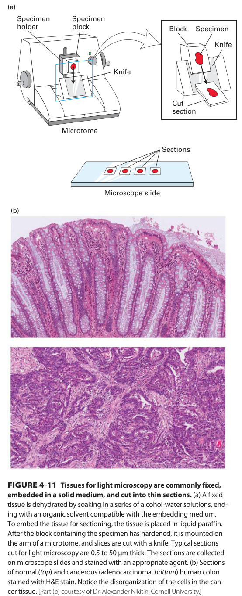
| fixation | 固定 |
| embedding | 包埋 |
| section | 切片 |
| microtome | 切片机 |
| paraffin | 石蜡 |
| dehydration | 脱水 |
| H&E stain | H&E 染色 |
| adenocarcinoma | 腺癌 |
| microscope slide | 显微镜载玻片 |
| organic solvent | 有机溶剂 |
| connective tissue | 结缔组织 |
视觉区分（图 4-11b）。若酶催化从无色前体产生有色或其他可见沉淀的反应，该酶可通过其有色反应产物在细胞切片中检测。此类染色技术虽曾常见，但已在很大程度上被可视化特定蛋白质的其他技术取代，如下讨论。
荧光显微术可定位和量化活细胞中特定分子
或许用光显微术在细胞内定位分子的最通用强大技术是细胞荧光染色和荧光显微术观察。若化学物质在一个波长（激发波长）吸光并在特定更长波长发光（荧光），则称荧光。观察荧光样本的现代显微镜配置为使激发光通过物镜进入样本，然后选择性地观察从样本通过物镜返回的发射荧光光。这通过用特殊类型滤光片（二向色镜）将激发光反射进样本并允许更长波长光通过到观察者实现（见图 4-9d）。我们讨论荧光显微术可用于检查细胞中特定分子的若干方式。
离子敏感荧光染料可测定胞内离子浓度
活细胞内 Ca²⁺ 或 H⁺ 浓度可用荧光染料（荧光色素）测量，其荧光取决于这些离子浓度。如后续章节讨论，胞内 Ca²⁺ 和 H⁺ 浓度对许多细胞过程有显著影响。例如许多激素和其他刺激使胞质 Ca²⁺ 从静息水平约 10⁻⁷ M 升至 10⁻⁶ M，诱导各种细胞反应如肌肉收缩。
对 Ca²⁺ 敏感的荧光色素 fura-2 含五个羧酸基，与乙醇形成酯键。所得 fura-2 酯亲脂，可从培养基跨质膜扩散入细胞。胞质内，酯酶水解 fura-2 酯，生成 fura-2，其游离羧酸基使分子非亲脂故不能跨细胞膜，留在胞质。细胞内，每个 fura-2 分子可结合单个 Ca²⁺ 离子，但不结合其他细胞阳离子。此结合在特定范围内与胞质 Ca²⁺ 浓度成比例，增加 fura-2 在某一特定波长的荧光。在第二波长，fura-2 的荧光无论是否结合 Ca²⁺ 都相同，从而提供细胞区域 fura-2 总量的度量。通过在荧光显微镜中连续检查细胞并测量两波长 fura-2 荧光
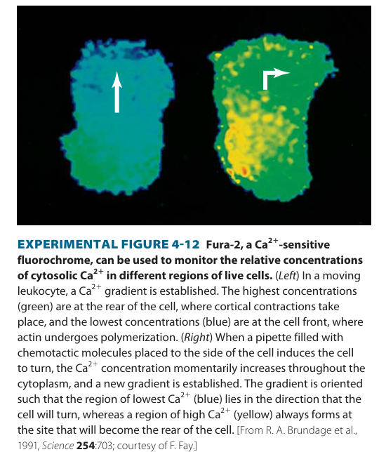
| Fura-2 | Fura-2 |
| fluorochrome | 荧光色素 |
| Ca²⁺ | Ca²⁺ |
| cytosol | 胞质 |
| leukocyte | 白细胞 |
| gradient | 梯度 |
| cortical contraction | 皮质收缩 |
| actin polymerization | 肌动蛋白聚合 |
| chemotactic molecule | 趋化分子 |
| pipette | 吸管 |
| cytoplasm | 胞质 |
比的快速变化，可量化结合 Ca²⁺ 的 fura-2 比例的快速变化，从而量化胞质 Ca²⁺ 浓度（图 4-12）。
对 H⁺ 浓度敏感的荧光染料（如 SNARF-1）可类似用于监测活细胞胞质 pH。其他有用探针由连接到弱碱的荧光色素组成，弱碱在中性 pH 下仅部分质子化故可自由透过细胞膜。但在酸性细胞器中，这些探针被质子化；因质子化探针不能重新跨过细胞器膜，它们在腔中积累的浓度远高于胞质。故此类荧光染料可用于特异性染色活细胞中特定细胞器（图 4-13）。
免疫荧光显微术可检测固定细胞中特定蛋白质
上述常见化学染料染色核酸或广泛蛋白质类别，但检测特定蛋白质的存在和位置更具信息量。免疫荧光显微术（最广泛使用的检测特定蛋白质的方法）使用共价附着荧光染料的抗体。用此方法，须首先产生目的蛋白的抗体。如 4.1 节简述及第 23 章详述，作为对感染响应的一部分，脊椎动物免疫系统产生称抗体的蛋白质，特异性结合感染因子。细胞
生物学家利用此免疫响应产生特定蛋白的抗体。考虑你已纯化蛋白 X，然后注射到实验动物使其对该蛋白作为外来分子响应。数周内，动物将产生免疫反应并制造蛋白 X（"抗原"）的抗体。若收集动物血液，其中将有蛋白 X 的抗体与许多其他不同抗原的抗体及所有其他血液蛋白混合。你现在可将蛋白 X 共价结合树脂，用亲和层析结合并选择性保留只对蛋白 X 特异的抗体。抗体可从树脂洗脱，现在你有特异性结合蛋白 X 的试剂。此方法产生多克隆抗体，因动物中许多不同细胞贡献了抗体，抗体可能结合蛋白 X 上许多不同表位。或者，如本章前述，可产生分泌蛋白 X 上特定表位抗体的克隆细胞系；这些称单克隆抗体。
用任一类型抗体定位蛋白质，细胞或组织必须首先固定以确保所有组分留在原位，且细胞必须透化以允许抗体进入，通常通过用非离子去垢剂孵育细胞或
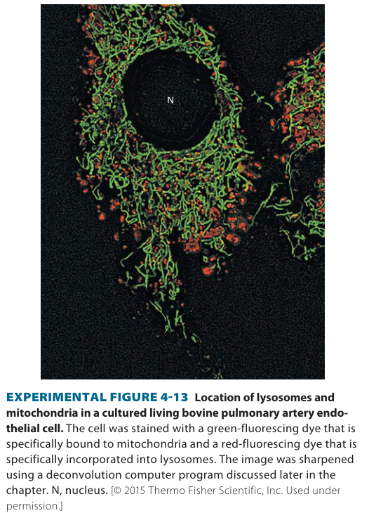
| lysosome | 溶酶体 |
| mitochondrion | 线粒体 |
| endothelial cell | 内皮细胞 |
| pulmonary artery | 肺动脉 |
| deconvolution | 去卷积 |
| nucleus | 细胞核 |
| fluorescent dye | 荧光染料 |
| bovine | 牛 |
用有机溶剂提取脂质。在免疫荧光显微术的一个版本中，抗体共价连接荧光色素。经典使用的荧光色素包括罗丹明和 Texas red（发红光）、Cy3（发橙光）和荧光素（发绿光）；但现已开发更新更光稳定的荧光色素，发射波长从蓝到远红。当荧光色素-抗体复合物加入透化细胞或组织切片时，复合物将结合相应抗原，然后在激发波长照射时点亮。用不同波长荧光的不同染料染色标本允许在同一细胞内定位多种蛋白质和 DNA（见章首图）。
此技术最常用的变体称间接免疫荧光显微术，因为对目的蛋白特异的抗体被间接检测。此技术中，未标记单克隆或多克隆抗体加到标本，然后是结合第一抗体恒定（Fc）段的第二荧光色素标记抗体。例如可通过用所有兔 IgG 抗体共同的 Fc 段免疫山羊产生"二抗"；偶联荧光色素后，此第二抗体制备（称"山羊抗兔"）将检测用于染色组织或细胞的任何兔抗体（图 4-14）。因数个
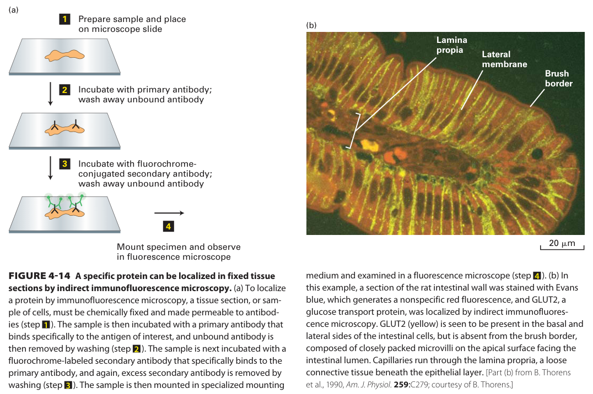
| indirect immunofluorescence microscopy | 间接免疫荧光显微术 |
| antibody | 抗体 |
| primary antibody | 一抗 |
| secondary antibody | 二抗 |
| fluorochrome | 荧光色素 |
| antigen | 抗原 |
| fixation | 固定 |
| permeable | 通透 |
| mounting medium | 封片剂 |
| GLUT2 | GLUT2 |
| glucose transport protein | 葡萄糖转运蛋白 |
| brush border | 刷状缘 |
| microvilli | 微绒毛 |
| apical surface | 顶面 |
| intestinal lumen | 肠腔 |
| capillary | 毛细血管 |
| lamina propria | 固有层 |
| connective tissue | 结缔组织 |
| Evans blue | Evans blue |
山羊抗兔抗体分子可结合标本中单个兔抗体分子，荧光通常比用单个荧光色素标记抗体亮得多。此方法常扩展为双标记荧光显微术，其中两蛋白可同时可视化。例如可用在不同动物（如兔和鸡）中制造的一抗和用不同荧光色素标记的二抗（如山羊抗兔和绵羊抗鸡）可视化两蛋白。在另一变体中，一蛋白用间接免疫荧光可视化，第二蛋白用特异性结合它的染料可视化。一旦在荧光显微镜上拍摄个体图像，它们可电子合并（图 4-15）。
在此技术的另一广泛使用版本中，用分子遗传技术制造编码融合短氨基酸序列（表位标签）的重组蛋白 cDNA。在细胞中表达时，此 cDNA 将产生连接到特定标签的蛋白。两个常用表位标签是 FLAG（编码氨基酸序列 DYKDDDDK，单字母氨基酸码）和 myc（编码序列 EQKLISEEDL）。然后可用偶联荧光色素的 FLAG 或 myc 表位单克隆抗体检测细胞中重组蛋白。此技术扩展允许同时可视化
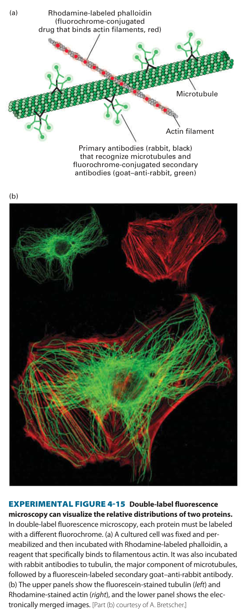
| double-label fluorescence microscopy | 双标记荧光显微术 |
| fluorochrome | 荧光色素 |
| rhodamine | 罗丹明 |
| phalloidin | 鬼笔环肽 |
| filamentous actin | 丝状肌动蛋白 |
| tubulin | 微管蛋白 |
| microtubule | 微管 |
| fluorescein | 荧光素 |
| secondary antibody | 二抗 |
| primary antibody | 一抗 |
| fixation | 固定 |
| permeabilization | 通透 |
| goat-anti-rabbit | 山羊抗兔 |
两蛋白，一蛋白用 FLAG 标记，另一用 myc 标记。每个标记蛋白然后用不同颜色可视化，例如用 Alexa-488 标记抗体（发绿光）检测 myc 表位，用 Alexa-568 标记抗体（发红光）检测 FLAG 表位。
荧光蛋白标记允许活细胞中特定蛋白质可视化
水母 Aequorea victoria 表达天然荧光蛋白，称绿色荧光蛋白（GFP，约 27 kDa）。GFP 含丝氨酸、酪氨酸和甘氨酸序列，其侧链自发环化形成绿色荧光色素（蓝光照射时）。用重组 DNA 技术，可制造 GFP 编码序列与目的蛋白编码序列融合的 DNA 构建体。当此构建体引入并表达于细胞时，产生 GFP"标记"蛋白，其中目的蛋白作为同一多肽一部分与 GFP 共价连接。虽 GFP 是中等大小蛋白，但目的蛋白的功能常不因与 GFP 融合而改变。此技术允许可视化 GFP 从而目的蛋白。不仅可立即看到 GFP 标记蛋白的位置，还可在活细胞中随时间观察其分布从而评估其动态或跟踪各种细胞处理后其定位。用 GFP 标记特定蛋白的简单想法彻底改变了细胞生物学，并导致许多不同荧光蛋白的开发（图 4-16）。使用此多彩荧光蛋白允许可视化两
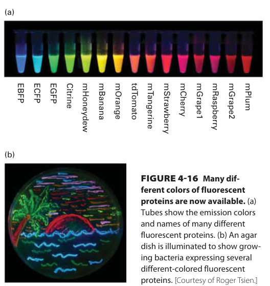
| fluorescent protein | 荧光蛋白 |
| emission color | 发射颜色 |
| agar | 琼脂 |
| bacteria | 细菌 |
| GFP | GFP |
| ECFP | ECFP |
| EBFP | EBFP |
| Citrine | Citrine |
| mCherry | mCherry |
| tdTomato | tdTomato |
个或更多蛋白（若每个用不同颜色荧光蛋白标记）。我们在后续章节描述利用荧光蛋白的其他技术。
去卷积和共聚焦显微术增强三维荧光物体可视化
常规荧光显微术有两大限制。首先，样本发射的荧光光不仅来自焦面，还来自其上下分子；故观察者看到由细胞许多深度分子荧光图像叠加导致的模糊图像。模糊效应使确定实际空间排列困难。其次，为可视化厚标本，须在整个样本各深度收集连续（系列）图像然后对齐以重建原始厚组织中的结构。已开发两种获取高分辨率三维信息的一般方法。两种方法都要求电子收集图像以便计算操作。
第一种方法称去卷积显微术，用计算方法去除样本失焦部分的荧光贡献。考虑一个三维样本，从三个不同焦面记录图像。因整个样本被照亮，平面 2 的图像将含平面 1 和 3 的失焦荧光。若我们确切知道平面 1 和 3 的失焦荧光如何贡献到平面 2 收集的光，我们可计算去除它。为获特定显微镜的此信息，我们可从含微小荧光珠的测试玻片拍摄一系列焦面图像。每个珠代表一个光点，在失焦时变成模糊物体；从这些图像可确定点扩散函数，使我们能计算失焦时贡献"模糊"的荧光点源分布。一旦我们如此校准显微镜，实验图像系列可计算去卷积。带自动台收集图像和关联软件去卷积的显微镜有商业产品。去卷积恢复的图像显示令人印象深刻的细节而无模糊（如图 4-17）。
获取更好三维信息的第二种方法称共聚焦显微术，因为它用光学方法从特定焦面获取图像并排除其他面光。共聚焦显微镜收集通过样本垂直深度的一系列图像，从中可计算生成准确的三维表示。当今常用两类共聚焦显微镜：点扫描共聚焦
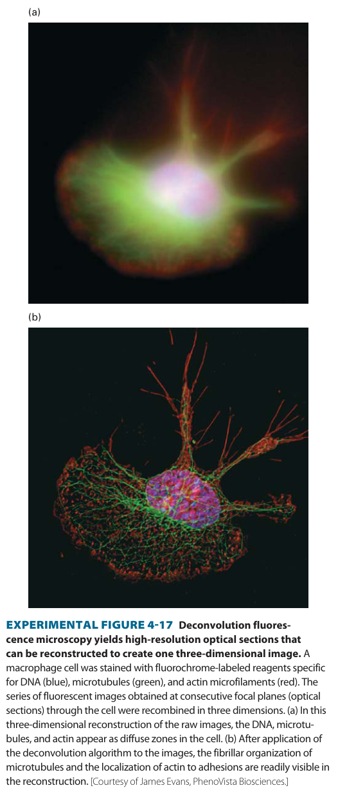
| deconvolution fluorescence microscopy | 去卷积荧光显微术 |
| optical section | 光学切片 |
| three-dimensional reconstruction | 三维重建 |
| macrophage | 巨噬细胞 |
| microtubule | 微管 |
| actin microfilament | 肌动蛋白微丝 |
| fibrillar organization | 纤维组织 |
| adhesion | 粘附 |
| focal plane | 焦平面 |
| DNA | DNA |
显微镜（也称激光扫描共聚焦显微镜 LSCM）和转盘共聚焦显微镜。每种显微镜的想法是只照亮和收集一个小焦面区域的发射荧光光，以排除失焦光。这可通过在发射光到达探测器前通过针孔收集实现--来自照亮焦面的光通过，而来自其他焦面的光大部分被排除。照亮区域然后移动跨整个焦面以电子建立图像。两类显微镜在如何覆盖图像上不同。点扫描显微镜用激发波长的点激光光源快速以光栅模式扫描焦面，在光电倍增管收集发射荧光，从而建立图像（图 4-18a）。然后可在样本不同深度拍摄系列图像生成三维重建。点扫描共聚焦显微镜可提供二维和三维异常高分辨率图像（图 4-19），尽管有两个小限制。首先，扫描每个焦面需可观时间，故若成像非常动态过程，显微镜可能无法足够快收集图像跟踪动态。其次，它用强激光照亮每个点，可能漂白所成像荧光色素并通过光毒性损伤活细胞，从而限制可收集图像数。
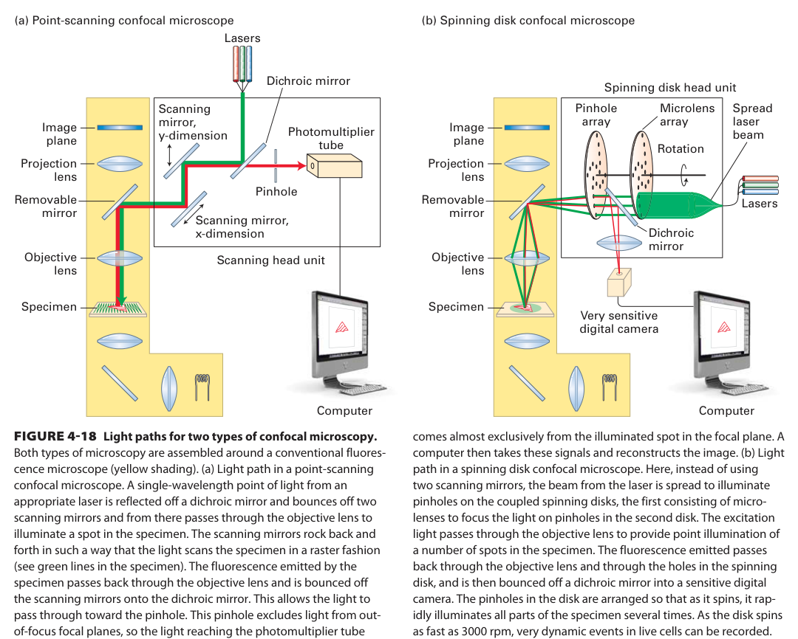
| confocal microscopy | 共聚焦显微术 |
| point-scanning confocal microscope | 点扫描共聚焦显微镜 |
| spinning disk confocal microscope | 转盘共聚焦显微镜 |
| dichroic mirror | 二色镜 |
| scanning mirror | 扫描镜 |
| objective lens | 物镜 |
| pinhole | 针孔 |
| photomultiplier tube | 光电倍增管 |
| microlens array | 微透镜阵列 |
| pinhole array | 针孔阵列 |
| focal plane | 焦平面 |
| raster | 光栅 |
| laser | 激光器 |
| projection lens | 投影镜 |
转盘显微镜克服这两个问题（图 4-18b）。来自激光的激发光散开并照亮高速旋转（如 3000 rpm）转盘的一小部分；转盘实际由两连接盘组成：一有 20000 透镜精确聚焦激光到第二盘的 20000 针孔。针孔排列使其随盘每转完全扫描样本焦面数次。发射荧光光通过第二盘针孔返回，被二向色镜反射并聚焦到高灵敏度数码相机。这样，样本在不到一毫秒内扫描完，故即使高度动态的荧光报告体的实时位置也能捕获（图 4-20）。转盘显微镜当前限制是针孔大小通常固定且须与物镜放大率匹配，故通常配置用于 63× 或 100× 物镜，对组织切片可能需要的低倍成像不太有用。但去年内，针孔大小可变的转盘头单元已可用。故点扫描和转盘共聚焦显微镜有重叠和互补优势。
双光子激发显微术允许深入组织样本成像
我们刚见点扫描共聚焦显微术如何帮助减少失焦面荧光。为此，它聚焦激光光锥到扫描焦面的点。焦面上下区域也被此光锥照亮，
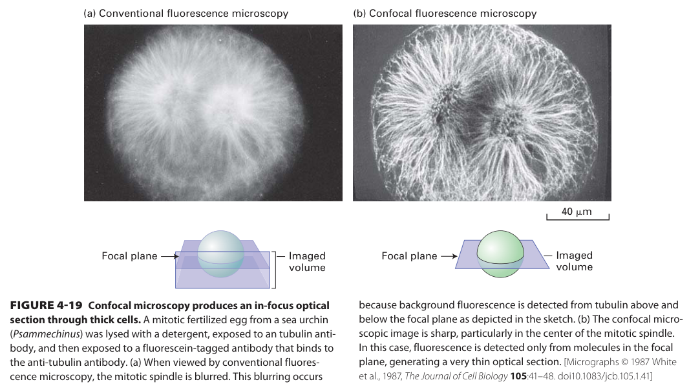
| confocal microscopy | 共聚焦显微术 |
| optical section | 光学切片 |
| mitotic spindle | 有丝分裂纺锤体 |
| tubulin | 微管蛋白 |
| fluorescein | 荧光素 |
| focal plane | 焦平面 |
| background fluorescence | 背景荧光 |
| sea urchin | 海胆 |
| Psammechinus | Psammechinus |
| fertilized egg | 受精卵 |
| detergent | 去垢剂 |
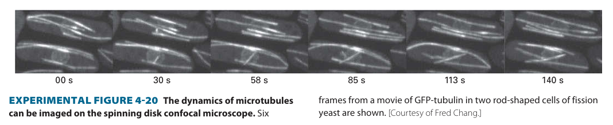
| spinning disk confocal microscope | 转盘共聚焦显微镜 |
| microtubule | 微管 |
| GFP-tubulin | GFP-微管蛋白 |
| fission yeast | 裂殖酵母 |
| rod-shaped cell | 杆状细胞 |
| dynamic | 动态 |
产生须通过针孔收集光去除的失焦信号。此强光锥也导致光漂白（使荧光蛋白失活）或光毒性损伤样本。若样本很薄，这些不是显著问题，但随样本变厚变得更相关。为克服这些问题，利用了荧光色素可被单光子（如 488 nm）或两半能量光子（960 nm）激发的发现，任一都产生相同发射波长（图 4-21a）。故若 960 nm 激光光锥聚焦到一面中一点，使只有焦点有足够光子密度激发荧光色素（图 4-21b），将无失焦信号且更少光漂白或光毒性。因只有焦面荧光色素被激发，双光子显微术可用于探索更厚样本，且无需针孔排除失焦光。但双光子激发显微术需非常高激光强度，因两光子须在约飞秒
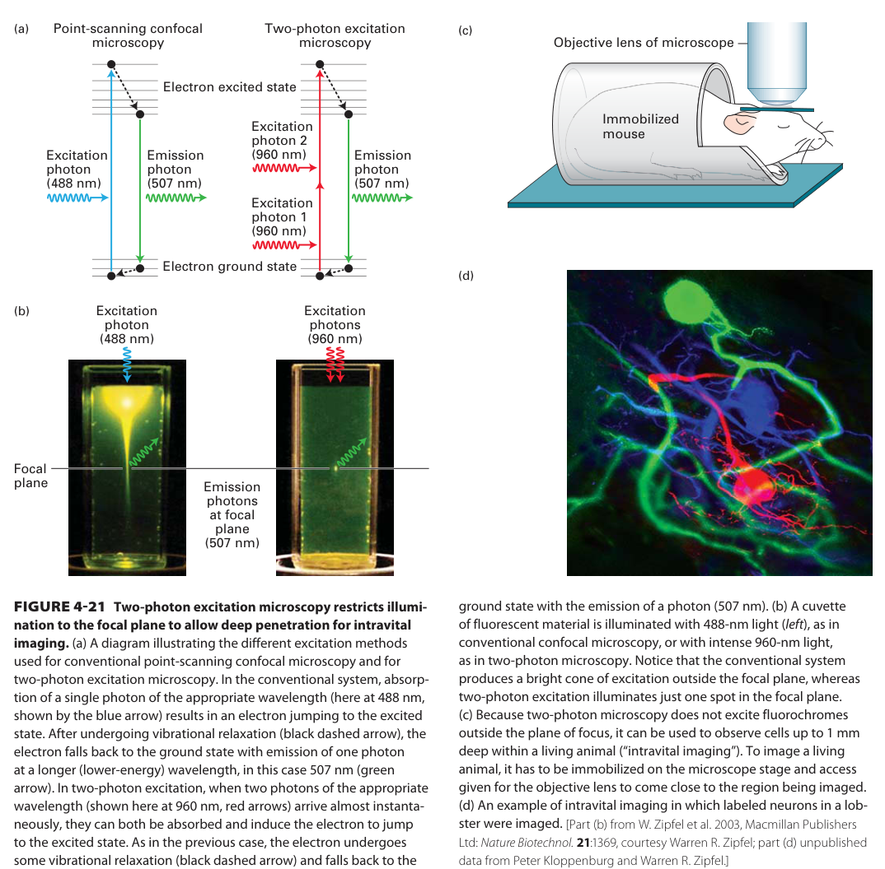
| two-photon excitation microscopy | 双光子激发显微术 |
| intravital imaging | 活体成像 |
| focal plane | 焦平面 |
| excited state | 激发态 |
| ground state | 基态 |
| vibrational relaxation | 振动弛豫 |
| photon | 光子 |
| wavelength | 波长 |
| fluorochrome | 荧光色素 |
| confocal microscopy | 共聚焦显微术 |
| cuvette | 比色皿 |
| neuron | 神经元 |
| lobster | 龙虾 |
| electron | 电子 |
| immobilized | 固定的 |
内到达，这通过快速激光脉冲实现。若动物中个体细胞表达不同颜色变体荧光蛋白，双光子显微术可用于观察活体动物中（称活体成像）约 1 mm 深度内的事件（图 4-21c、d）。
TIRF 显微术在一个焦面提供异常成像
我们刚描述的共聚焦显微镜提供令人惊叹且有信息量的图像，但不完美。科学家继续开发针对特殊情况优化的系统。一些实验情况要求在表面旁薄焦面荧光成像，此时最小化失焦背景最优。例如共聚焦成像不理想于探索细胞与盖玻片间黏附位点的蛋白质细节，或跟踪附着盖玻片微管的组装动力学。这两种情况都可用全内反射荧光（TIRF）显微术高灵敏度成像，其中只有紧邻盖玻片的标本部分被照亮。TIRF 显微术最常见配置中，激发光通过物镜
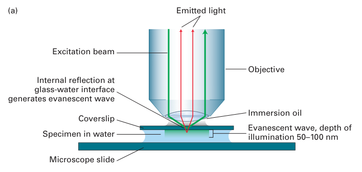
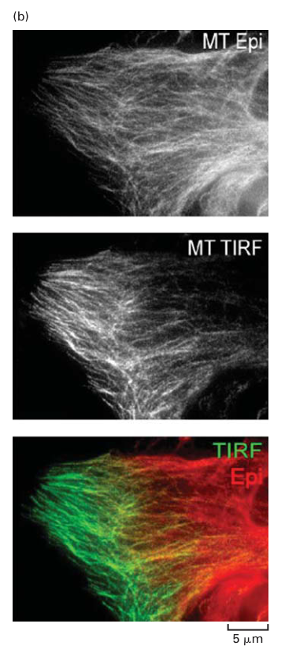
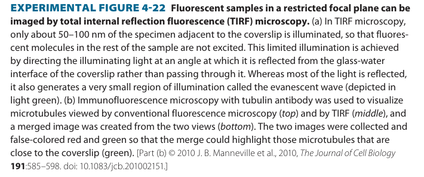
| total internal reflection fluorescence microscopy | 全内反射荧光（TIRF）显微术 |
| TIRF | TIRF |
| evanescent wave | 倏逝波 |
| coverslip | 盖玻片 |
| focal plane | 焦平面 |
| immunofluorescence microscopy | 免疫荧光显微术 |
| tubulin | 微管蛋白 |
| microtubule | 微管 |
| immersion oil | 浸油 |
| objective | 物镜 |
| microscope slide | 显微镜载玻片 |
| internal reflection | 全反射 |
（图 4-22a）。但光到达盖玻片角度调整使光从盖玻片反射并通过物镜返回。这产生称倏逝波的窄光带，只照亮盖玻片旁约 50-100 nm 样本（微管厚度的 2-4 倍），不照亮样本其余部分。故若标本中有复杂荧光结构混合物，TIRF 显微镜只显示盖玻片 50-100 nm 内的。TIRF 在识别盖玻片上生长细胞底部结构（图 4-22b）和测量微管和肌动蛋白丝等结构组装解聚动力学（见第 17、18 章）方面异常有用。
FRAP 揭示细胞组分动态
活细胞荧光成像揭示荧光分子群体的位置和群体动态，但不告诉你个体分子多动态。例如若我们看到 GFP 标记蛋白在细胞表面形成斑块，这代表荧光蛋白分子的稳定集合还是动态平衡（荧光蛋白进出斑块）？我们可通过观察斑块中分子动态研究此问题（图 4-23）。
若我们用高强度光永久漂白斑块中荧光色素（如 GFP），最初无荧光发出，在荧光显微镜中看起来暗。但若斑块中组分与细胞其他地方未漂白分子动态平衡，漂白分子将被未漂白分子替换，荧光将开始恢复。荧光恢复速率是分子动态度量。此技术称荧光漂白后恢复（FRAP），揭示了细胞许多组分多么动态。例如它用于确定膜蛋白扩散系数（见图 7-10）和分泌途径特定组分动态。在测量标记蛋白动态的另一方法中，开发了可切换的荧光蛋白变体，用适当波长激光从发绿光切换到发红光。这样，切换的发红光分子群体动态可在活细胞中成像。
FRET 测量荧光色素间距离
荧光显微术也可用于确定两蛋白是否在体内相互作用，利用称福斯特共振能量转移（FRET）的现象。此技术使用一对荧光蛋白，第一个的发射波长接近第二个的激发波长（图 4-24）。例如用 433 nm 光激发青色荧光蛋白（CFP）时，它荧光并发射 475 nm 光。但若黄色荧光蛋白（YFP）在附近，CFP 不发射 475 nm 光，而是通过 FRET 将能量转移给 YFP，YFP 发射 530 nm 光。FRET 效率与 R⁻⁶ 成比例（R 为荧光色素间距离），故对距离小变化非常敏感，实际上 10 nm 以上距离不可检测。故用 433 nm 光照射适当制备样本并在 530 nm 观察，可判断分别用 CFP 和 YFP 标记的蛋白是否非常接近。例如已开发 FRET 传感器确定小 GTP 结合调节蛋白与其效应器在细胞中信号传导的位置（图 4-24b）。
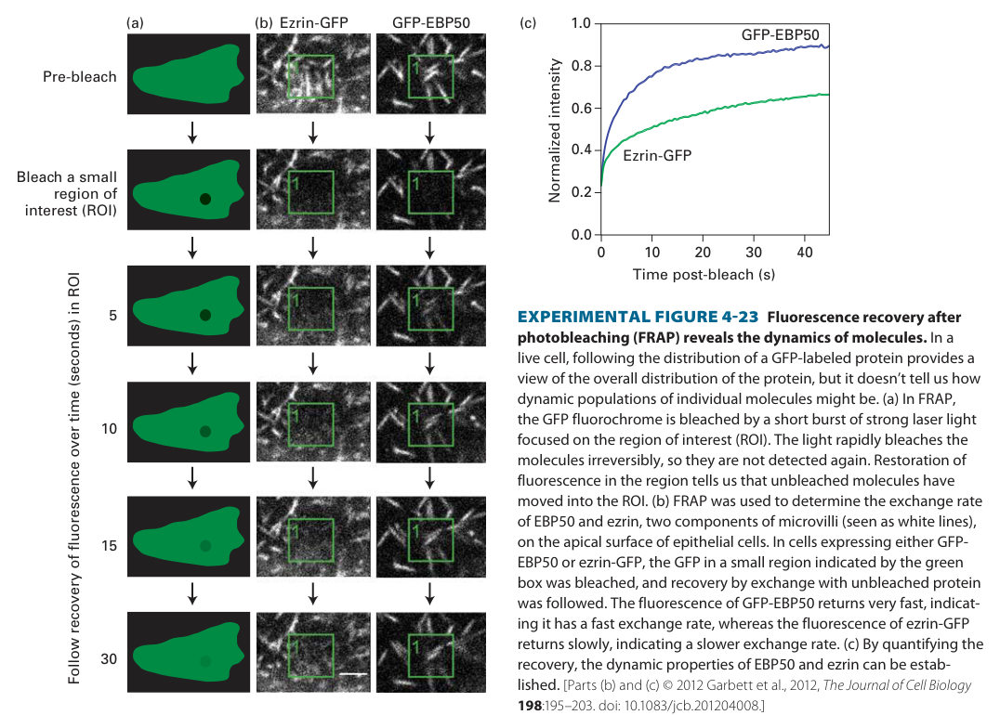
| fluorescence recovery after photobleaching | 光漂白后荧光恢复（FRAP） |
| FRAP | FRAP |
| photobleaching | 光漂白 |
| region of interest | 感兴趣区（ROI） |
| ROI | ROI |
| microvilli | 微绒毛 |
| apical surface | 顶面 |
| epithelial cell | 上皮细胞 |
| exchange rate | 交换速率 |
| GFP | GFP |
| EBP50 | EBP50 |
| ezrin | ezrin |
FRET 的一个巧妙应用称 FRET 生物传感器，可用于感知活细胞中局部生化环境。想法是表达含 CFP 和 YFP 的单个多肽，中间被感知生化信号时发生构象变化的区域隔开。无信号时，CFP 和 YFP 距离太远不能显著 FRET。但当检测到信号时，构象变化使 CFP 和 YFP 足够近产生 FRET。此技术的一个版本可用于测量特定蛋白激酶局部活性。此情况中，CFP 和 YFP 之间含蛋白激酶底物（传感结构域）和特异性结合磷酸化底物的配体结构域的多肽区域（图 4-25a）。当激酶磷酸化传感结构域时，配体结构域结合它，使 CFP 和 YFP 足够近发生 FRET。因蛋白磷酸化是动态过程，适当磷酸酶去磷酸化传感结构域将使 FRET 生物传感器失活。故 FRET 信号将反映细胞中激酶活性超过磷酸酶活性的区域。例如科学家开发了蛋白激酶 A 活性 FRET 生物传感器，它被
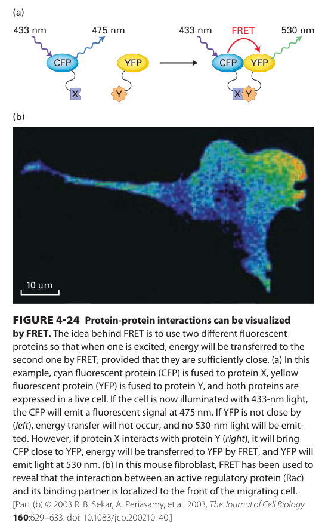
| FRET | 福斯特共振能量转移（FRET） |
| cyan fluorescent protein | 青色荧光蛋白（CFP） |
| CFP | CFP |
| yellow fluorescent protein | 黄色荧光蛋白（YFP） |
| YFP | YFP |
| protein-protein interaction | 蛋白-蛋白相互作用 |
| fluorescent protein | 荧光蛋白 |
| fibroblast | 成纤维细胞 |
| regulatory protein | 调节蛋白 |
| Rac | Rac |
| energy transfer | 能量转移 |
信号分子 cAMP 升高激活（见 15.1 节）。在表达蛋白激酶 A 生物传感器的细胞中，cAMP 药理升高诱导快速 FRET（图 4-25b）。富有创造力的研究者正在开发 FRET 生物传感器以照亮许多不同类型局部环境；例如存在测量 Ca²⁺ 浓度和位置及 GTP 酶开关蛋白激活状态的 FRET 生物传感器（见图 3-32）。
超分辨率显微术可定位蛋白质到纳米精度
如前讨论，荧光显微镜理论分辨率极限约 0.2 μm（200 nm）。已开发两种绕过此限制的一般方法，统称超分辨率显微术。第一类方法中，照明光以产生更高分辨率图像的方式图案化。结构照明显微术（SIM）中，标本用光暗条纹图案照亮，随照明图案旋转拍摄数张图像以产生莫尔条纹。图像计算分析给出约 100 nm 分辨率，是常规共聚焦显微镜的两倍，如核膜部分微图所见（图 4-26a）。SIM 特别适合活细胞成像，因三维图像可每 4 秒收集。受激发射损耗（STED）显微术中，样本像点扫描显微术一样扫描，但有一重要区别：聚焦激发激光点被环形"损耗光束"包围，有效使激发区域小得多。因计算机记录激发点的精确位置并可记录其发射，它可建立令人印象深刻的图像，最佳产生 30 nm 分辨率，大大增强例如肌动蛋白纤维图像中可见的细节（图 4-26b）。
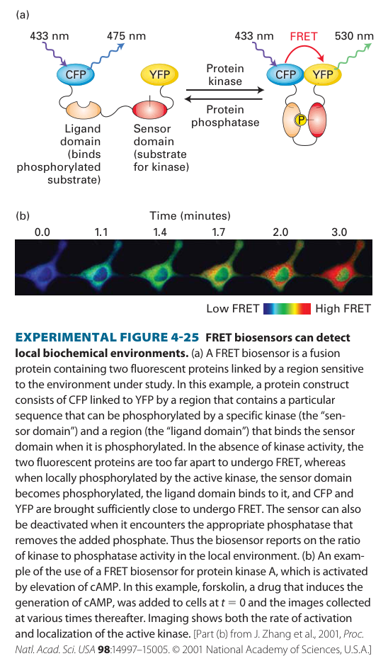
| FRET biosensor | FRET 生物传感器 |
| fusion protein | 融合蛋白 |
| kinase | 激酶 |
| phosphatase | 磷酸酶 |
| sensor domain | 传感结构域 |
| ligand domain | 配体结构域 |
| phosphorylation | 磷酸化 |
| cAMP | cAMP |
| protein kinase A | 蛋白激酶 A |
| forskolin | forskolin |
| biosensor | 生物传感器 |
| substrate | 底物 |
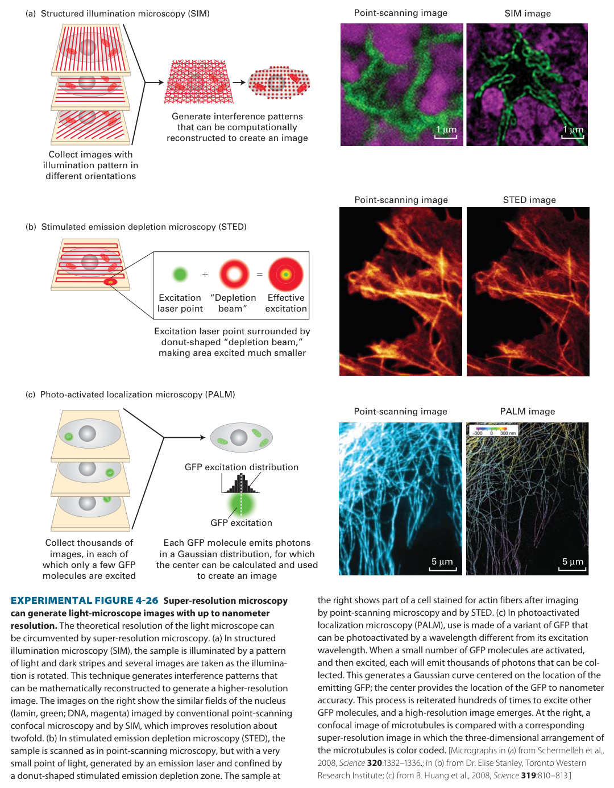
| super-resolution microscopy | 超分辨率显微术 |
| structured illumination microscopy | 结构照明显微术（SIM） |
| SIM | SIM |
| stimulated emission depletion microscopy | 受激发射损耗显微术（STED） |
| STED | STED |
| photoactivated localization microscopy | 光激活定位显微术（PALM） |
| PALM | PALM |
| confocal microscopy | 共聚焦显微术 |
| GFP | GFP |
| Gaussian distribution | 高斯分布 |
| microtubule | 微管 |
| actin fiber | 肌动蛋白纤维 |
| lamin | 核纤层蛋白 |
| nucleus | 细胞核 |
| nanometer | 纳米 |
| depletion beam | 损耗束 |
| excitation laser | 激发激光 |
| point-scanning | 点扫描 |
第二种一般方法使用单分子检测和定位。为理解其原理，考虑相距 75 nm 的两个荧光点。成像时，它们各自产生高斯荧光分布，重叠如此多以致看起来像一个点。但若能分别成像每个点并找到每条高斯曲线中心，就能"突破"分辨率极限检测到 75 nm 间隔的两点。一种方法称光激活定位显微术（PALM），依赖 GFP 变体可光激活的能力；即它只有在被特定波长光（不同于其激发波长）激活后才变荧光。考虑我们只激活一个此类 GFP 分子时发生什么。然后激发样本时，激活的 GFP 发射数百光子，产生高斯分布（图 4-26c）。虽每个光子分析不精确告诉我们 GFP 在哪，分布中心可告诉我们 GFP 位于何处到纳米精度。若现在激活另一个 GFP，可同样精度单独定位。PALM 中，小百分比 GFP 被激活并以高精度各自定位，然后另一组被激活并定位，随额外激活和定位循环记录，高分辨率图像浮现。例如微管三维分布可比常规荧光显微术清晰得多地看到（见图 4-26c）。此类图像生成需可观时间，故其在活细胞样本上的使用迄今受限。但超分辨率显微术的巨大益处促使大量努力改进其灵敏度、速度和空间分辨率，我们可期待这些方法的快速发展。
光片显微术可快速成像活组织中的细胞
我们上面讨论的大多数共聚焦成像方法通过同一物镜照亮和检测荧光色素；这确保样本激发和发射荧光成像在同一焦面。此方法结果是样本可成像深度有限。最近开发了绕过此限制的新技术。光片显微术中，样本从侧面照亮然后从正交方向观察（图 4-27a）。聚焦激光束来回扫描样本，
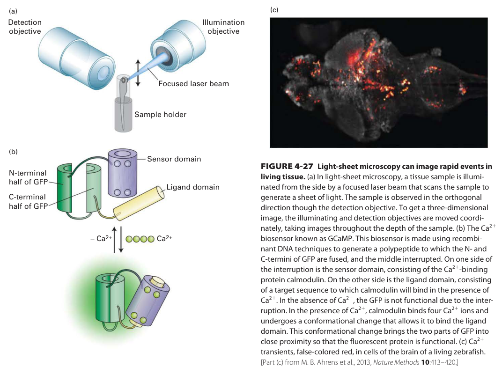
| light-sheet microscopy | 光片显微术 |
| detection objective | 检测物镜 |
| illumination objective | 照明物镜 |
| GCaMP | GCaMP |
| biosensor | 生物传感器 |
| recombinant DNA | 重组 DNA |
| calmodulin | 钙调蛋白 |
| sensor domain | 传感结构域 |
| ligand domain | 配体结构域 |
| conformational change | 构象变化 |
| Ca²⁺ transient | Ca²⁺ 瞬变 |
| zebrafish | 斑马鱼 |
| fluorescent protein | 荧光蛋白 |
| polypeptide | 多肽 |
照亮单个面。检测物镜与照亮面成直角，然后对样本成像。为生成三维图像，须对样本所有面成像。这通过协调地步进照亮光片和检测物镜穿过样本生成图像栈实现，然后可计算组装成三维渲染。
此技术使用一例中，科学家对活斑马鱼脑细胞中 Ca²⁺ 浓度成像。斑马鱼脑中神经元使其表达 Ca²⁺ 生物传感器 GCaMP，它基于无 Ca²⁺ 时不荧光但设计为其存在时荧光的 GFP（图 4-27b）。此生物传感器由 GFP 组成，其中 N 端和 C 端结构域连接但蛋白中间被打断，Ca²⁺ 传感结构域附于一端，配体结构域附于另一端。因 GFP 结构被打断，蛋白在适当照明光激发下不再荧光。传感结构域源自小 Ca²⁺ 结合蛋白钙调蛋白（见图 3-31），结合四个 Ca²⁺ 离子时改变构象。配体结构域是钙调蛋白只在被 Ca²⁺ 结合激活时才结合的靶序列。当活性钙调蛋白结合配体结构域时，它改变被打断 GFP 的结构使其现在可被激发并荧光。这样，每当 Ca²⁺ 水平升至足以激活钙调蛋白时报告荧光信号。如第 22 章讨论，神经元通讯时，部分通讯涉及 Ca²⁺ 水平升高。此神经元通讯可通过在表达 GCaMP 生物传感器的斑马鱼脑中用光片显微术活体成像（图 4-27c）。
第 4.2 节关键概念
光学显微术：探索细胞结构与细胞内蛋白质可视化
● 光显微镜分辨率约 0.2 μm，受光波长限制。
● 折射率差异可通过相差和微分干涉相差显微术观察单细胞部分。
● 组织通常须固定、切片和染色才能观察细胞和亚细胞结构。
● 荧光显微术利用一波长吸光并更长波长发光的化合物。
● 离子敏感荧光染料可测量胞内离子浓度（如 Ca²⁺）。
● 免疫荧光显微术用抗体在固定和透化细胞中定位特定组分。
● 间接免疫荧光显微术用未标记一抗，后跟识别一抗并允许其定位的荧光标记二抗。
● 编码表位标签的短序列可附加到蛋白编码序列，允许用表位标签抗体定位表达的蛋白。
● 绿色荧光蛋白（GFP）及其衍生物是天然荧光蛋白。
● 将 GFP 融合到目的蛋白允许在活细胞中探索其定位和动态。
● 去卷积和共聚焦显微术通过去除失焦荧光光，提供荧光图像大幅改善的清晰度。
● 全内反射荧光（TIRF）显微术允许以极清晰度看到盖玻片旁荧光样本。
● 荧光漂白后恢复（FRAP）允许分析分子群体动态。
● 福斯特共振能量转移（FRET）是两荧光蛋白非常接近时光能从一转移到另一的技术，从而揭示两分子在细胞中何时接近。
● 超分辨率显微术允许纳米分辨率详细荧光图像。
● 光片显微术可通过从侧面用光片照亮样本提供厚样本荧光图像。
4.3 电子显微术：高分辨率成像
生物样本（如单蛋白、细胞器、细胞和组织）的电子显微成像提供比光显微术高得多的超微结构分辨率。电子的短波长意味着透射电子显微镜分辨率极限理论上 0.005 nm（远小于单个原子直径），即比光显微镜好 40000 倍，比未辅助人眼好 200 万倍。但透射电子显微镜在生物系统研究中的有效分辨率远低于此理想。最佳条件下，透射电子显微镜可获得 0.10 nm 分辨率，比常规光显微镜好约 2000 倍，至少比当前超分辨率显微镜好 300 倍。
电子显微术基本原理与光显微术相似；主要区别是电子显微镜中电磁透镜聚焦高速电子束而非光显微镜所用可见光。
透射电子显微镜（TEM）中，电子从灯丝发射并在电场中加速（图 4-28 左）。聚光透镜聚焦电子束到样本；物镜和投影透镜聚焦通过标本的电子并投影到观察屏或其他探测器。因空气中的原子吸收电子，电子源和探测器间整个管保持超高真空。故活体材料不能用电子显微术成像。
本节描述电子显微术观察生物材料的各种方法。最广泛使用的仪器是透射电子显微镜，但扫描电子显微镜（SEM）也常用，提供互补信息，如本节末讨论（图 4-28 右）。
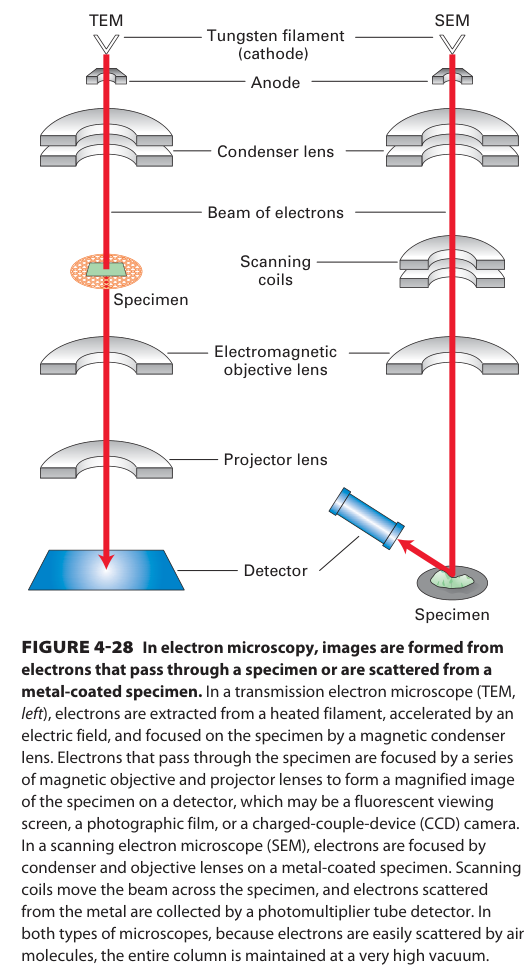
| electron microscopy | 电子显微术 |
| transmission electron microscope | 透射电子显微镜（TEM） |
| TEM | TEM |
| scanning electron microscope | 扫描电子显微镜（SEM） |
| SEM | SEM |
| tungsten filament | 钨丝 |
| cathode | 阴极 |
| anode | 阳极 |
| condenser lens | 聚光镜 |
| electromagnetic objective lens | 电磁物镜 |
| projector lens | 投影镜 |
| electron | 电子 |
| scanning coil | 扫描线圈 |
| photomultiplier tube | 光电倍增管 |
| charged-couple-device camera | 电荷耦合器件（CCD）相机 |
| CCD | CCD |
| vacuum | 真空 |
| magnetic lens | 磁透镜 |
单分子或结构可用负染或金属投影成像
生物学中常探索单个大分子（如蛋白质或核酸）或结构（如病毒和构成细胞骨架的丝）的详细形状。在透射电子显微镜中观察这些物体相对容易（前提是用散射入射电子的重金属染色）。制备样本时，首先吸附到 3 mm 电子显微镜载网（图 4-29a），
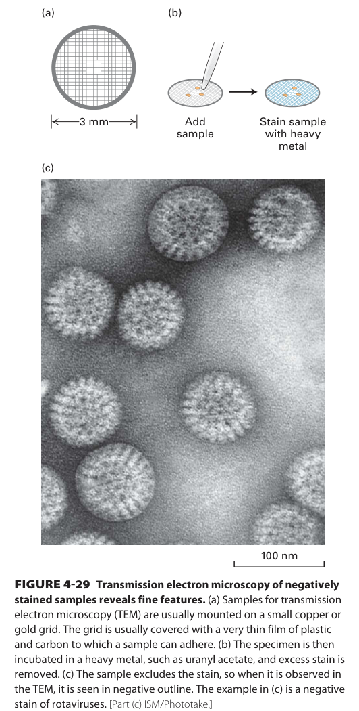
| negative stain | 负染 |
| transmission electron microscopy | 透射电子显微术（TEM） |
| grid | 载网 |
| copper | 铜 |
| gold | 金 |
| heavy metal | 重金属 |
| uranyl acetate | 醋酸铀酰 |
| rotavirus | 轮状病毒 |
| plastic | 塑料 |
| carbon | 碳 |
载网涂薄层塑料和碳。然后样本在重金属（如醋酸铀酰）溶液中浸泡，去除多余溶液（图 4-29b）。此程序结果，醋酸铀酰涂载网，但从样本吸附区域排除。在 TEM 中观察样本时，我们看到染料被排除处，故样本称负染。因染料可精确揭示样本拓扑，可获得高分辨率图像（图 4-29c）。
样本也可用金属投影制备（图 4-30）。此技术中，样本吸附到小块云母，然后通过金属蒸发涂薄层铂，再用酸或漂白剂溶解，留下铂涂层（称复型）。铂涂层可从固定角度或旋转样本时低角度生成（后者称低角旋转投影）。复型转移到载网在 TEM 检查时，提供样本三维拓扑信息。
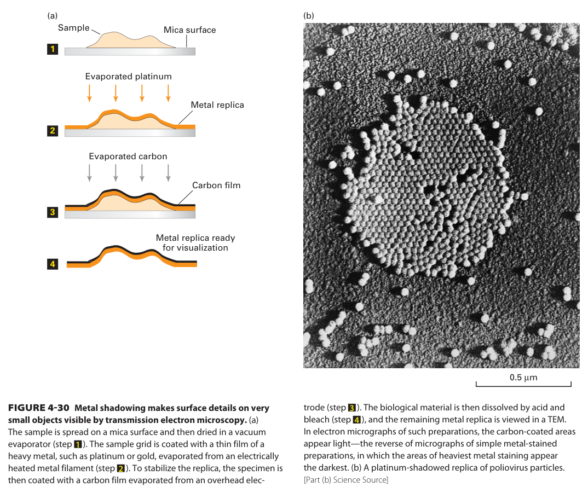
| metal shadowing | 金属投影 |
| mica | 云母 |
| vacuum evaporator | 真空蒸发器 |
| platinum | 铂 |
| gold | 金 |
| carbon film | 碳膜 |
| metal replica | 金属复型 |
| poliovirus | 脊髓灰质炎病毒 |
| filament | 灯丝 |
| electrode | 电极 |
| bleach | 漂白剂 |
细胞和组织切成薄片供电镜观察
单个细胞和组织块太厚，无法在标准透射电子显微镜中直接观察。为克服此问题，开发了制备和切割细胞和组织薄片的方法。在电子显微镜中检查这些切片时，细胞内部的组织、美丽和复杂性被揭示，导致细胞生物学革命--首次看到新细胞器和细胞骨架的最初瞥见。
为制备薄片，需化学固定样本、脱水、用硬化液态塑料（类似有机玻璃）浸渍，然后切约 5-100 nm 厚切片。为看到结构，样本须用铀和铅盐等重金属染色，可在塑料包埋前或切片后进行。薄切片电子显微术观察的细胞和组织示例见此处及全书（图 4-31）。重要
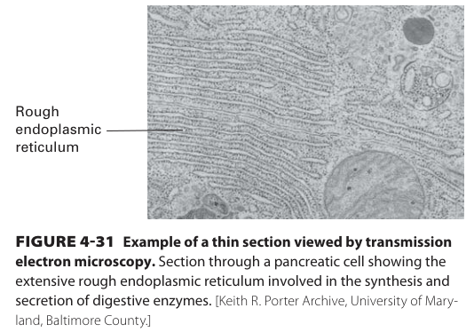
| thin section | 薄切片 |
| transmission electron microscopy | 透射电子显微术 |
| pancreatic cell | 胰腺细胞 |
| rough endoplasmic reticulum | 粗面内质网 |
| digestive enzyme | 消化酶 |
| secretion | 分泌 |
的是要认识到所得图像只代表通过细胞的薄切片，故为获三维视图，须通过样本切连续切片并从一系列连续图像重建样本（图 4-32）。
免疫电子显微术在超微结构水平定位蛋白质
正如免疫荧光显微术用于光显微镜水平定位蛋白质，也开发了在电子显微镜水平用抗体在薄切片中定位蛋白质的方法。但制备传统薄切片的苛刻程序（化学固定和塑料包埋）可变性或修饰抗原使其不再被特异抗体识别。
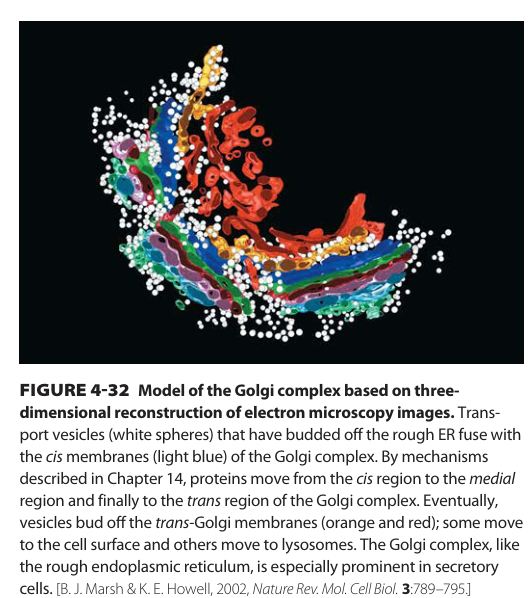
| Golgi complex | 高尔基体 |
| three-dimensional reconstruction | 三维重建 |
| transport vesicle | 运输囊泡 |
| rough endoplasmic reticulum | 粗面内质网 |
| cis membrane | 顺面膜 |
| cis region | 顺面区 |
| medial region | 中间面区 |
| trans region | 反面区 |
| trans-Golgi membrane | 反面高尔基体膜 |
| lysosome | 溶酶体 |
| secretory cell | 分泌细胞 |
| budding | 出芽 |
已开发更温和的方法，如轻度固定、液氮温度冷冻后切片、最后室温与抗体孵育。为使抗体在电子显微镜中可见，须附着电子致密标记。一种方法是用涂蛋白 A（结合所有抗体分子 Fc 段的细菌蛋白）的电子致密金颗粒（图 4-33）。因金颗粒衍射入射电子，它们显示为暗点。
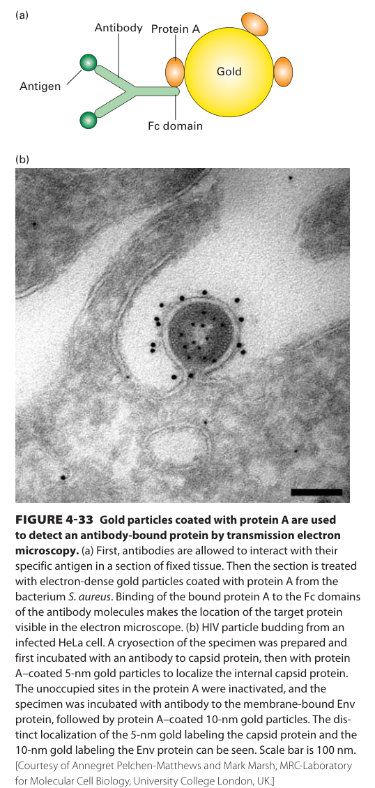
| protein A | 蛋白 A |
| gold particle | 金颗粒 |
| transmission electron microscopy | 透射电子显微术 |
| antibody | 抗体 |
| antigen | 抗原 |
| Fc domain | Fc 结构域 |
| Staphylococcus aureus | 金黄色葡萄球菌 |
| HIV | HIV |
| cryosection | 冷冻切片 |
| capsid protein | 衣壳蛋白 |
| Env protein | Env 蛋白 |
| scale bar | 比例尺 |
| electron-dense | 电子致密 |
| HeLa cell | HeLa 细胞 |
冷冻电子显微术允许无固定或染色观察标本
标准透射电子显微术不能用于研究活细胞，样本中无水导致大分子变性失活。但水合、未固定、未染色的生物标本如果冷冻可在透射电子显微镜中直接观察。冷冻电子显微术中，样本水悬液涂到载网上成极薄膜，在液氮中冷冻，用特殊支架保持此状态。冷冻样本然后放入电子显微镜。极低温（−196 °C）防止水蒸发，
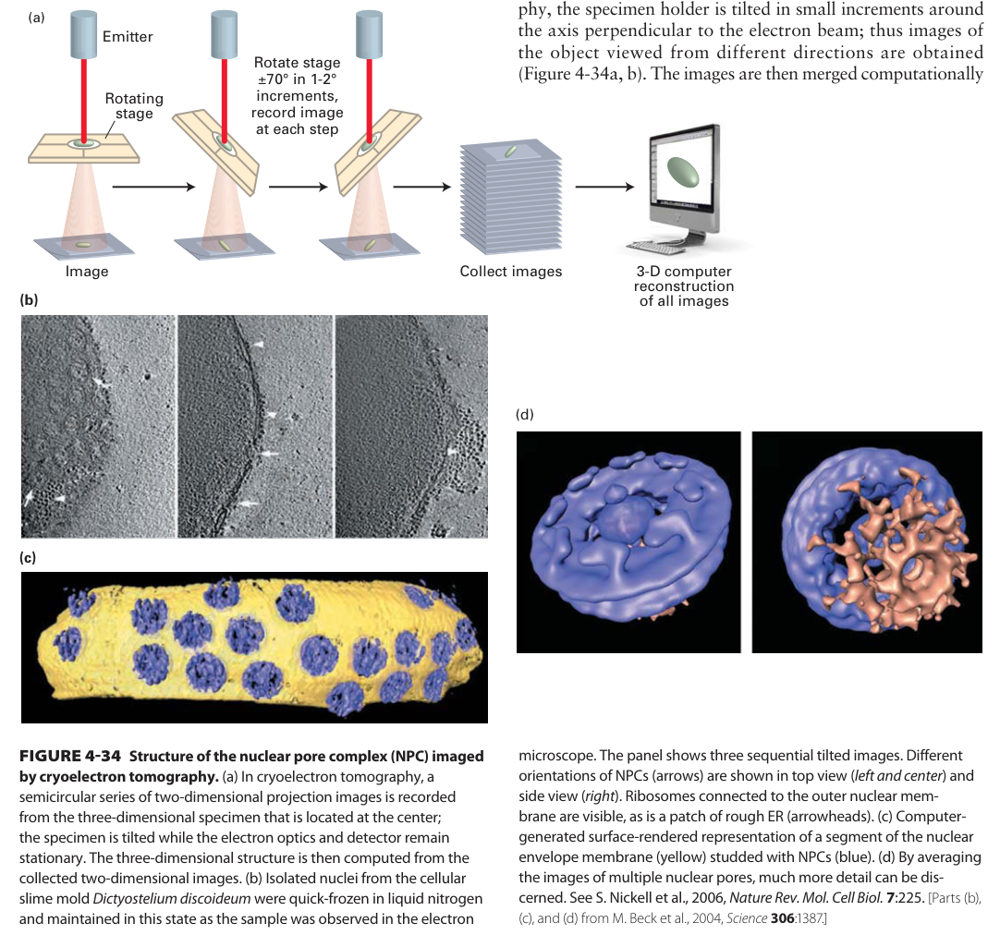
| cryoelectron tomography | 冷冻电子断层术 |
| nuclear pore complex | 核孔复合体（NPC） |
| NPC | NPC |
| projection image | 投影图像 |
| three-dimensional reconstruction | 三维重建 |
| Dictyostelium discoideum | 盘基网柄菌 |
| cellular slime mold | 细胞黏菌 |
| ribosome | 核糖体 |
| rough endoplasmic reticulum | 粗面内质网 |
| nuclear envelope | 核膜 |
| nuclear membrane | 核膜 |
| surface-rendered representation | 表面渲染表示 |
| liquid nitrogen | 液氮 |
| electron optics | 电子光学 |
| tilt | 倾斜 |
即使在真空中。故样本可在其天然水合状态下详细观察，无需固定或重金属染色。通过数百图像的计算机平均，可生成几乎到原子分辨率的三维模型。例如此方法用于生成核糖体、第 11 章讨论的肌肉钙泵和脊髓灰质炎病毒衣壳三维结构模型（见图 5-43b）。
此技术的扩展（冷冻电子断层术）允许研究者确定包埋在冰中（即接近生命状态）的细胞器甚至整个细胞的三维架构。单张图是缺乏深度信息的结构二维表示。但从不同角度看同一结构给我们三维视角。冷冻电子断层术中，标本支架以垂直于电子束的轴小增量倾斜；从而获得从不同方向观察物体的图像（图 4-34a、b）。图像然后计算合并
为称断层图的三维重建（图 4-34c、d）。冷冻电子断层术的缺点是样本须相对薄，约 200 nm；这比共聚焦光显微术可研究的样本（200 μm 厚）薄得多。
金属包被标本的扫描电子显微术揭示表面特征
扫描电子显微术（SEM）允许研究者观察未切片金属包被标本的表面。显微镜内强电子束在样本上快速扫描。涂层分子被激发释放二次电子，聚焦到闪烁探测器；所得信号显示在阴极射线管（类似常规电视，见图 4-28 右）。所得扫描电子显微图有三维外观，因样本任一点产生的二次电子数取决于电子束相对表面的角度（图 4-35）。扫描电子显微镜的分辨能力（受金属涂层厚度限制）仅约 10 nm，远低于透射仪器。
第 4.3 节关键概念
电子显微术：高分辨率成像
● 电子显微术因用于成像样本的高能电子短波长而提供极高分辨率图像。
● 简单标本（如蛋白或病毒）可负染或重金属投影供透射电子显微镜（TEM）检查。
● 较厚切片通常须固定、脱水、塑料包埋、切片，然后用电子致密重金属染色后 TEM 观察。
● 特定蛋白质可用附着重金属标记（如小金颗粒）的特异抗体通过 TEM 定位。
● 冷冻电子显微术通过在极低温保持样本，允许在 TEM 中检查水合、未固定、未染色生物标本。
● 金属投影材料的扫描电子显微术（SEM）揭示标本表面特征。
4.4 细胞器的分离
光和电子显微术对细胞的检查导致认识到真核细胞含一组共同细胞器（见第 1 章图 1-12a）。但用显微术观察细胞器和记录其详细结构并不清楚揭示它们扮演的角色及如何工作。为此，需在天然状态分离细胞器并鉴定和剖析每个组分功能。因此，与显微术进展并行，分离和表征细胞器的方法被开发。例如溶酶体是生物分子被降解的细胞器（第 1 章描述）。溶酶体已用显微术看到，但其功能只有在开发分离方法后才被发现。
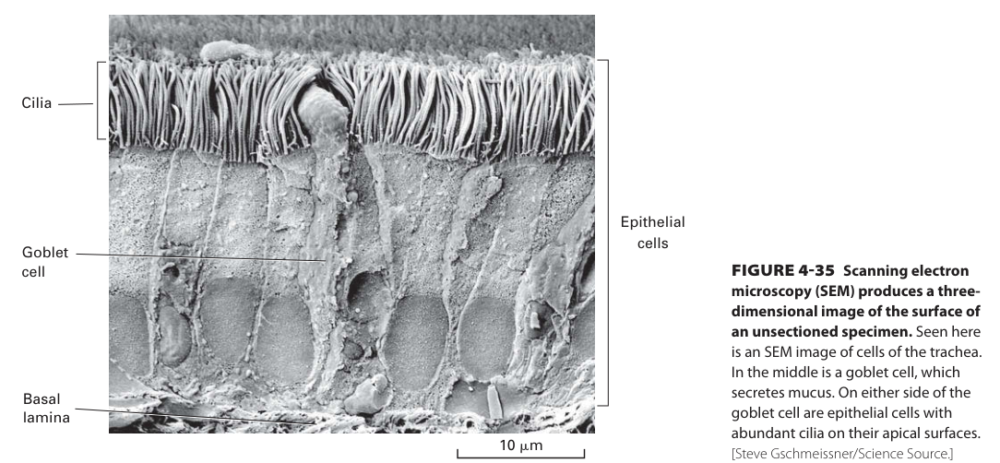
| scanning electron microscopy | 扫描电子显微术（SEM） |
| SEM | SEM |
| three-dimensional image | 三维图像 |
| cilia | 纤毛 |
| goblet cell | 杯状细胞 |
| mucus | 粘液 |
| epithelial cell | 上皮细胞 |
| basal lamina | 基板 |
| apical surface | 顶面 |
| trachea | 气管 |
当开发纯化某种细胞器的方法时，就可开始编录其所有组分并探究每个组分功能。另一例，电子显微术揭示某些核糖体与内质网相关，提示内质网是蛋白质合成位点。我们现在知道将要从细胞分泌的蛋白质由这些核糖体制造，新生分泌蛋白跨膜易位到内质网腔。如第 13 章描述，理解此机制依赖内质网的分离和分泌蛋白合成与易位体外测定的开发。故在能开始完全理解细胞器之前，需建立生化测定以探究每个组分功能，最终目标是从纯化组分重构功能性细胞器。
大多数细胞器包在脂双层中并执行特定功能。每种类型细胞器有可识别结构并含特定蛋白质组以执行功能。细胞生物学家利用此事实鉴定特定细胞器。例如第 12 章讨论，细胞中大多数 ATP 由 ATP 合酶制造（在线粒体中将 ADP 转化为 ATP），故 ATP 合酶是线粒体的好标记。如我们将讨论，细胞器特异标记的可用性有助于细胞器纯化的开发。
本节讨论用于打开细胞以纯化细胞器的方法。最后以定义细胞器完整蛋白质清单的蛋白质组学近期进展结尾。
细胞破裂释放其细胞器和其他内容物
纯化亚细胞结构的第一步是破裂质膜和细胞壁（如有）释放细胞内容物。为此，细胞悬浮于适当 pH 和盐含量的溶液（通常等渗蔗糖 0.25 M 或与细胞内成分相似的盐组合）。许多细胞可通过在高速搅拌器中搅拌细胞悬液或暴露于超高频声音（超声）破裂。或者，质膜可通过特殊加压组织匀浆器剪切（细胞被迫通过柱塞和器壁间很窄空间；器壁和柱塞间压力使细胞破裂）。
回想细胞放在低渗溶液（离子和小分子浓度低于细胞内）中时水流进入。此渗透流可使细胞膨胀，削弱质膜便于破裂。通常细胞溶液最好保持 0 °C 以在从细胞稳定力释放后保存酶和其他组分。
破裂细胞产生悬浮细胞组分混合物（匀浆），可从中回收所需细胞器。因大鼠肝含丰富单一细胞类型，此组织用于许多细胞器经典研究。但相同分离原理适用于几乎所有细胞和组织，这些细胞分馏技术的修改可用于分离和纯化任何所需组分。
离心可分离多种类型细胞器
第 3 章我们考虑了离心原理及离心技术用于分离蛋白质和核酸。类似方法用于分离和纯化各种细胞器，它们大小和密度不同故以不同速率沉降。
大多数细胞分馏程序从过滤细胞匀浆的差速离心开始，速度递增（图 4-36）。每个速度离心适当时间后，留在管顶的液体（上清液）倒出并以更高速度离心。差速离心所得沉淀组分通常含混合细胞器，尽管核和病毒颗粒有时可由此程序完全纯化。
差速离心所得的不纯细胞器组分可通过平衡密度梯度离心进一步纯化（按密度分离细胞组分）。组分重悬后，铺在含密集非离子物质（如蔗糖或甘油）梯度的溶液上。管以高速（约 40000 rpm）离心数小时，使每个颗粒迁移到周围液体密度等于颗粒密度的平衡位置（图 4-37）。然后用窄管泵出离心管内容物回收梯度不同层并收集组分（见经典实验 4-1）。
因每种细胞器有独特形态特征，细胞器制备纯度可用电子显微镜检查评估。或者，可量化细胞器特异标记分子。例如细胞色素 c 只存在于线粒体，故其在溶酶体组分中的存在表明被线粒体污染。类似地，过氧化氢酶只存在于过氧化物酶体；酸性磷酸酶只在溶酶体；核糖体只在粗面内质网或胞质。
细胞器特异抗体有助于制备高度纯化细胞器
差速和平衡密度梯度离心后剩余的细胞组分通常含超过
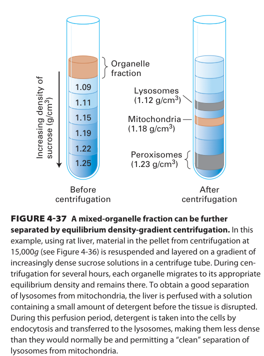
| equilibrium density-gradient centrifugation | 平衡密度梯度离心 |
| organelle fraction | 细胞器组分 |
| lysosome | 溶酶体 |
| mitochondrion | 线粒体 |
| peroxisome | 过氧化物酶体 |
| sucrose | 蔗糖 |
| density | 密度 |
| centrifugation | 离心 |
| perfusion | 灌注 |
| detergent | 去垢剂 |
| endocytosis | 胞吞作用 |
| rat liver | 大鼠肝脏 |
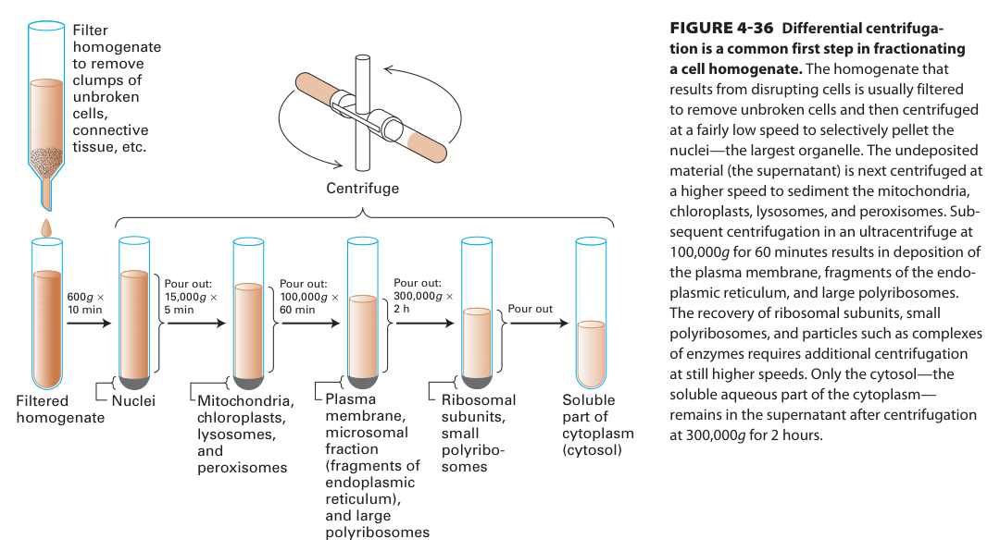
| differential centrifugation | 差速离心 |
| homogenate | 匀浆 |
| supernatant | 上清液 |
| pellet | 沉淀 |
| nucleus | 细胞核 |
| organelle | 细胞器 |
| mitochondrion | 线粒体 |
| chloroplast | 叶绿体 |
| lysosome | 溶酶体 |
| peroxisome | 过氧化物酶体 |
| plasma membrane | 质膜 |
| microsomal fraction | 微粒体组分 |
| endoplasmic reticulum | 内质网 |
| polyribosome | 多聚核糖体 |
| ribosomal subunit | 核糖体亚基 |
| cytosol | 胞液 |
| cytoplasm | 胞质 |
| ultracentrifuge | 超速离心机 |
| centrifugation | 离心 |
一种类型细胞器。各种细胞器特异膜蛋白的单克隆抗体是进一步纯化此类组分的强大工具。一例是纯化外表面覆盖蛋白网格蛋白的囊泡；这些有被囊泡源自受体介导内吞时质膜的有被小坑，第 14 章详述。结合到表面表达蛋白 A 的死细菌细胞的网格蛋白抗体，可在膜粗制备中选择性结合这些囊泡，整个抗体复合物可通过低速离心分离（图 4-38）。相关技术用涂特异抗体的微小金属珠。结合抗体从而连接金属珠的细胞器通过吸附到试管侧面小磁铁回收。
所有细胞含十余种大小（直径 50-100 nm）和密度相似的不同类型膜界小囊泡，使离心技术难分离。免疫技术对纯化此类囊泡的特定类别特别有用。例如脂肪和肌肉细胞含特定葡萄糖转运蛋白（GLUT4），定位到其中一种囊泡膜。胰岛素加入细胞时，这些囊泡与质膜融合，增加能从血摄取葡萄糖的葡萄糖转运蛋白数。如第 15 章所见，此过程对维持血中适当糖浓度关键。含 GLUT4 的囊泡
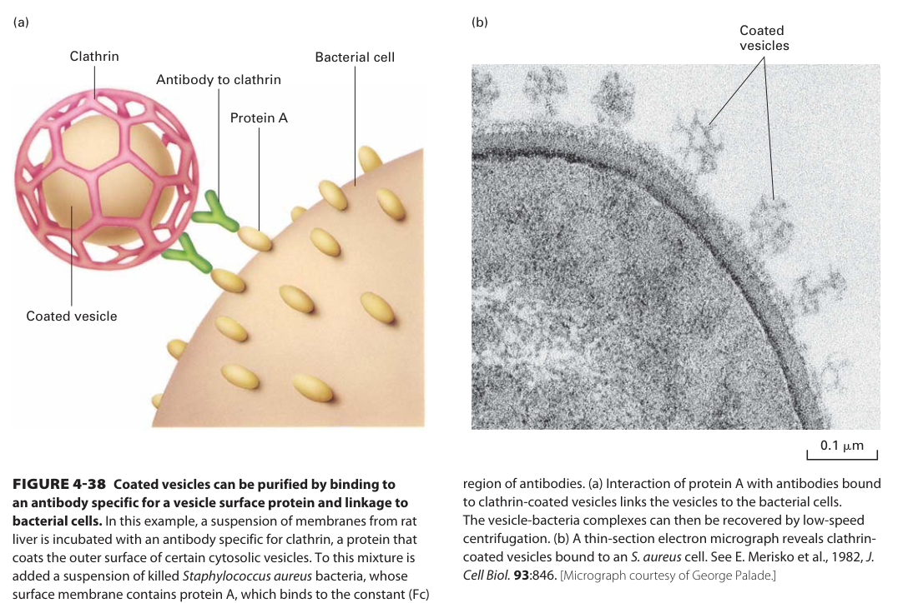
| coated vesicle | 有被囊泡 |
| clathrin | 网格蛋白 |
| antibody | 抗体 |
| protein A | 蛋白 A |
| Staphylococcus aureus | 金黄色葡萄球菌 |
| Fc region | Fc 区 |
| centrifugation | 离心 |
| thin-section electron micrograph | 薄切片电子显微图 |
| rat liver | 大鼠肝脏 |
| cytosolic vesicle | 胞质囊泡 |
| constant region | 恒定区 |
可用结合面向胞质的 GLUT4 蛋白片段的抗体纯化。类似地，第 14 章讨论的各种运输囊泡以独特表面蛋白为特征，允许借助特异抗体分离。
当无针对所研究细胞器的特异抗体时，使用此技术的变体。编码细胞器特异膜蛋白的基因通过添加表位标签片段修饰；标签放在面向胞质的蛋白片段上。在所研究细胞中稳定表达重组蛋白后，可用抗表位单克隆抗体（上述）纯化细胞器。
蛋白质组学揭示细胞器蛋白质组成
本节开头我们强调分离细胞器以鉴定其组分多么重要。多年来，技术不够精密无法产生每个细胞器蛋白质的完整清单，但基因组学和质谱的近期进展现已使之成为可能。此方法将细胞器分离与第 3 章讨论的蛋白质组学技术结合。
鉴定细胞器中所有蛋白需三步。首先，须能高度纯化地分离细胞器。其次，须有方法鉴定细胞器中所有蛋白序列。此鉴定通常通过用蛋白酶（如胰蛋白酶，在赖氨酸和精氨酸残基切割所有多肽）消化所有蛋白，然后用质谱测定所有所得肽的质量和序列完成。第三，须有基因组序列以鉴定所有肽来自的蛋白。这样，许多细胞器的蛋白质组已被确定。一例，最近对从小鼠脑、心、肾、肝纯化的线粒体蛋白质组学研究揭示 591 个线粒体蛋白，包括 163 个以前不知与此细胞器相关的蛋白。几种蛋白只在特定细胞类型的线粒体中发现。确定这些新鉴定线粒体蛋白相关功能是当前此细胞器研究的主要目标。
第 4.4 节关键概念
细胞器的分离
● 显微术揭示了真核细胞中存在一组共同细胞器。
● 通过强力匀浆、超声或其他技术破裂细胞释放其细胞器。细胞在低渗溶液中膨胀削弱质膜，便于破裂。
● 细胞匀浆的序贯差速离心产生部分纯化细胞器组分（按质量和密度不同）。
● 平衡密度梯度离心（按密度分离细胞组分）可进一步纯化差速离心所得细胞组分。
● 使用针对细胞器特异膜蛋白抗体的免疫技术对纯化大小和密度相似的细胞器和囊泡特别有用。
● 蛋白质组学分析可鉴定纯化细胞器制备物中所有蛋白组分。